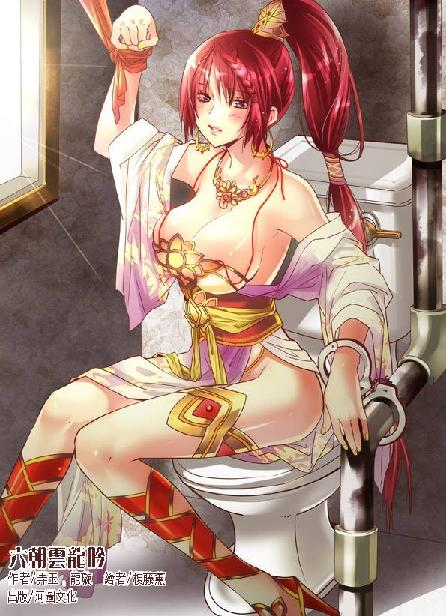

第48集·阴阳失衡
太泉古阵篇（7/7）
出版日期：2013-10-24
【本集内容简介】
重伤未愈的程宗扬只想拐带小香瓜私奔，潘金莲却将他视为黑魔海余孽，欲除之而后快！危急时，从鱼无夷手中得来的阴阳鱼竟然产生奇妙的变化……
听完程宗扬美好的轩辕坟移民开垦计划，朱老头眼带怜悯，小紫也展现出难得的温柔，但这两人归结出的事实让程宗扬惊恐无比，原来他对于太泉古阵的用处完全想错了！
※ ※ ※ ※ ※

封面人物：潘金莲
柔和的光芒从四面八方映照过来，一个银发的女子昏迷在地，她雪白的手臂贴在玻璃般光洁的地板上，能清楚看到一道紫黑色的印迹正以肉眼可见的速度缓缓消退，从腋窝退到肘下，然后是小臂、手腕、掌心……最后从指尖细小的针孔中，渗出一滴紫黑色的血珠。
虞紫薇双目紧闭，紊乱的呼吸渐渐变得平顺，原本僵硬的肢体也变得柔软。看着妹妹苍白的脸色终于恢复如常，虞白樱几乎生出一丝感激。多年来的杀手生涯，她早已不再是从前那个不谙世事的少女，易地而处，自己未必会信守承诺，这么轻易就放过对手。
忽然一只玉手伸来，戏谑地在臀上一弹。滑腻的臀肉抖动着，一滴晶莹的汗珠晃动几下，沿着白生生的雪臀滚落在地。
虞白樱咬住唇瓣，这才意识到自己还是别人砧上的鱼肉。她赤条条躺在一条皮革长椅上，双腿被人架在肩上，那只浑圆的雪臀向上抬起，臀下的地板湿淋淋都是水迹。一支又黑又粗的胶棒插在她水汪汪的蜜穴内，另一端则系在一具美妙的女体上。
“舒服吗？”何漪莲轻笑着，一手抚弄着她的臀肉。
虞白樱蓦然面红过耳。自从母亲身故，她与妹妹生命的一切都被强烈的复仇意念所占据，甚至不惜埋葬过去，成为在黑暗中行走的杀手。她已经记不清自己上一次单纯地因为害羞而脸红是什么时候。即使刚才经历高潮，她一多半心思也挂在处于生死边缘的妹妹身上，直到此时松懈下来，埋在心底的羞耻感才猛然升起。
这种羞耻不仅仅是因为自己在一个陌生人面前泄身，也不仅仅因为对方是一个女子，而是自己真的给一个女人当了女人，让一个女人像男人那样占有了自己的身体。那种性别的模糊感让她有种错觉，自己仿佛是男人、女人之下的第三类别，是侍奉女人的女人，比真正的女人更柔弱，更卑微。
何漪莲柔声道：“刚泄过身子，要歇歇呢。”
何漪莲说着将她双腿放到左侧，然后一弯腰，将虞白樱抱了起来。虞白樱不得不以一个柔婉的姿势，侧着身坐在何漪莲腿上。那根胶棒还留在她体内，让她玉脸涨得更红。
何漪莲一手搂着她的纤腰，手指灵巧地伸入她白美的腿缝儿间，另一只手则伸到她胸前，揉弄她高耸的雪乳，接着俯首吻住她的唇瓣。鼻尖轻触，滑腻的玉颊在脸上柔柔摩擦着，鼻端满是脂香粉浓的气息。刚泄过身的虞白樱正是最脆弱的时候，只觉自己就像一只被剥去外壳的蚕蛹，赤裸而柔弱。她软绵绵地偎依在何漪莲怀里，光洁的玉体在她指尖的爱抚下微微战栗。
相比于两个美人儿的温存和缱绻，另外一边男女间的交合要火热得多。一个熟艳的美妇赤条条骑在程宗扬腰间，放声浪叫，卖力地耸动雪臀。她两手撑在程宗扬身侧，丰满的乳球宛如两只白光光的雪团，在胸前沉甸甸跳动着，不时碰撞着发出诱人的腻响。细软的腰肢像狂风中的柳条一样来回扭动，那只丰腻白艳的大屁股不停起落，绽开的臀沟间，红嫩的屁眼儿时放时缩，就像一只妖淫的媚眼，充满挑逗的意味。在她两条雪白的大腿根部，敞露的蜜穴被一根怒胀的阳具塞得满满的，一圈红艳艳的蜜肉在穴口翻进翻出，带出一股又一股淫液。
程宗扬一边享受着尹馥兰的柔腻，一边摧动着几近崩溃的气轮，凝聚起所剩无几的真气，送入身上的艳妇体内。丹田是全身经络的根本，阴阳交汇的命门，对于修者而言，丹田要害无异于性命之地。尹馥兰却把自己的性命之地毫无保留地朝他打开，任由他的真气长驱直入，把自己的丹田当作他修炼的鼎炉，随意炼化真气中的杂质。
真气往复间，逐渐变得精纯。受创的经络仿佛解冻的小溪，渐渐有了一丝真气流动的迹象，程宗扬正试图打通受创的经络，尹馥兰已经支撑不住。当龟头又一次戳中花心，送入一股驳杂的气息，尹馥兰肥白的大屁股一阵哆嗦，柔腻的蜜穴仿佛握紧肉棒一样，激烈地抽搐着，蜜腔不住收缩。随着阴道的痉挛，肉穴尽头的花心仿佛一张柔滑的小嘴，含住龟头顶部不停吸吮。接着一股阴精从她体内深处涌出，浇在火热的肉棒上。
饱含着浓郁生命精元的阴精，对重伤的程宗扬而言无异于大补之物，阳具用力一挺，顺势转化为真元纳入丹田。
尹馥兰只觉花心仿佛被龟头吸住，足足泄了半盏茶时间，才停住战栗。她伏在程宗扬身上，丰腴的肉体瘫软得像要融化一样。
程宗扬运功正到紧要关头，没想到这具鼎炉先承受不住。如果自己强行榨取尹馥兰的阴精，对自己的伤势也许有些益处，但这美妇体质再好，也免不了阴精耗尽，寿元受损。他暗叹一声，停住运功。
尹馥兰伏在程宗扬身旁，媚眼如丝地娇喘道：“主人好生厉害……奴婢还未见过主人这样火热的肉棒呢……”
程宗扬以前从未想过，这样一个媚艳的美人儿光溜溜贴在身上，宛如一朵娇滴滴的鲜花让自己任意采撷，嘴上说着好听话曲意奉承，自己竟然会无动于衷。可这会儿自己确实没有半点心动，即使两人已经有过肉体最亲密的接触，即使她主动拿身子做鼎炉供自己疗伤，即使自己克制冲动，没有拿她肆意采补——但云雨之后，男女间什么两情相悦、卿卿我我、欢喜怜爱……之类的情绪，自己半点皆无。更不用提什么征服的快感，甚至连男欢女爱中最起码的欢字都欠奉，有的仅仅是肉体上的快感。
程宗扬似乎有些理解岳鸟人曾经的心情，面前虽然是一个活生生的美人儿，可自己对她的身世、经历、变故、心事、喜好……没有半点兴趣。就像上卫生间时，顶多对某只便池设计美观、功能实用有点喜悦的感觉，而不是撒完尿后，对便池心存感激或者怜惜。同样，这个美人儿在他眼中也仅仅是一件悦目的器具而已，其他任何情绪都显得多余。
程宗扬懒洋洋道：“你也很厉害嘛。被行淫兽咬成那样，还没事人一样。”
尹馥兰知道他在讥刺自己当日的淫态，讪讪地说不出话来。
程宗扬没有理会尹馥兰，而是饶有兴致地看着虞白樱。当初这个双胞胎中的姐姐与自己困在地下，纵然身处险境，不得不拿身体做交易，也不乏果决干脆，没有半点奴颜媚骨，彼此间更像是地位平等的伙伴，双方公平交易，各取所需。
然而此时她的神态全然不同，虽然被一个女子搂在怀中亲吻爱抚，虽然何漪莲的爱抚比自己粗糙得多，虽然那只在她胴体上游走的手掌令虞白樱羞耻万分，这个女杀手却显露出自己从未见过的柔媚和温婉，眉眼的羞态像极了娇柔羞怯的小妾。虽然同是女子，却在性事中分出了上下主次，让人一目了然。
程宗扬道：“这是什么意思？”
尹馥兰笑道：“这两个贱婢野性未驯，妈妈命奴婢们用心调教。”
“给你们当女人？这主意谁出的？”
“是紫妈妈的吩咐。”尹馥兰道：“妈妈身边的奴婢分为三阶九等，上阶两等是主事丫鬟、贴身丫鬟；中阶三等是侍奴长、侍奴和从侍奴；下阶四等是大丫头、丫头、小丫头和粗使丫头。妈妈御下最是尊卑分明，便是同阶，也以入门先后为序，下位者对上位者守弱伏雌，唯命是从。奴婢是妈妈指定的大丫头，莲奴是刚入门的小丫头。樱奴和薇奴因为过错被贬为最低等的粗使丫头，让她们来服侍，原是她们份内的差事。”
程宗扬都不知道自己该摆什么表情了。死丫头这路数是准备全面复辟奴隶社会？这么大的规矩，自己家里能盛得下吗？
两女足足纠缠了一盏茶工夫，何漪莲才笑吟吟松开唇瓣。虞白樱轻咳着，红唇被吻得微微发肿，湿漉漉散发出妖艳的光泽。
何漪莲笑道：“姐姐说的没错吧？还是女人更了解女人，知道樱儿妹妹最喜欢什么……”说着一手伸到虞白樱腿间，指尖微微一挑，捻住她秘处那颗小小的花蒂。
虞白樱低叫一声，两条白美的大腿紧紧并在一处，玉体随着她指尖的动作不停战栗，不多时，乳头便硬硬翘起。
何漪莲俯在她耳边，呵气如兰地说道：“做姐姐的女人，是不是比你想的更快活呢？”
虞白樱羞怩地垂下眼睛。忽然一只玉手挥来，脆生生给了她一记耳光，虞白樱猝不及防，被打得跌倒在地，肘膝重重撞在地板上，传来一阵火辣辣的疼痛。
尹馥兰斥道：“婊子都做了，还扮什么矜贵？把她铐起来！”
何漪莲从腰间取下一只蝴蝶状的小物件。“嗒嗒”两声轻响，把虞白樱双腕铐在椅脚。虞白樱上身贴着地面，接着头发被人拽起，只见尹馥兰把一支假阳具戴在腰间，伸手一拨，粗大的棒身像发怒的巨蛇一样扭动起来。低沉的“嗡嗡”声仿佛野兽喉中的低吼，令她身体不由自主地绷紧，心头充满惧意。
程宗扬懒洋洋道：“你们过来。”
尹馥兰与何漪莲一前一后伏在程宗扬面前，莺声道：“老爷。”
“把我那对护腕拿来。”
莫如霖送来的那对护腕原本坚硬无比，套在腕上却轻如羽毛，手臂像被一股浮力托起一样轻了许多。
程宗扬抬手撑起上身，尹馥兰连忙扶住他，娇声道：“老爷想起身，吩咐奴婢便是。”
程宗扬没好气地说道：“那不成废人了——这是什么？”
尹馥兰取下腰间的假阳具，笑道：“这里是仙人旧居，仙人留下的器具，无不是世间少见的精品，便是仙人用的角先生，也非比寻常。不仅可以转动，还能像蚯蚓一样伸缩，简直比活物还精巧几分。”
两女各戴着一支假阳具，尹馥兰那支更粗更大，顿时就把何漪莲比了下去。只不过转动时发出的噪音响得令人难受，程宗扬有些疑惑，按太泉古阵的科技水准，制作工艺似乎不至于这么粗糙。
尹馥兰道：“这声音也别有妙处。一纳入体内，整个腹腔的脏器都随着声音一同震动，莲奴昨日用过，说连子宫都震得酥麻，淫液流得满地都是呢。”说着她拉起何漪莲的手，放在那根假阳具上，笑道：“是不是呀？”
手指触到那根胶棒，何漪莲玉脸顿时一红，语调都有些发颤，低声道：“都是奴婢无能，昨日服侍姐姐，只一个时辰便连丢了五次……”
尹馥兰得意地一笑，一手抚住何漪莲的雪臀。
程宗扬目光停在何漪莲身侧，她腰间原本戴着一对蝴蝶状的物件，一只用在虞白樱身上，此时还剩下一只。程宗扬刚才没看清她是怎么把虞白樱铐住的，这时看见更觉奇怪，“这是什么？”
尹馥兰抿嘴一笑，把那只蝴蝶取了下来，顺手剥掉何漪莲的内裤，让她赤条条站在主人面前，双手背在身后，然后随手一扔。那只蝴蝶轻飘飘飞出，在贴到何漪莲腕上时，忽然灵巧地一翻，蝶翅下蓦然弹出两道半透明的弯弧，准确地铐住何漪莲双腕。
程宗扬怔了一下，那只蝴蝶铐设计极其精巧，丝毫没有一般手铐的冷硬，显然是欢爱时用的情趣手铐，可精巧到这种程度还是大大出乎自己的意料。尤其是高灵敏度的自动感应，用在一只情趣手铐上，科技含量实在高得有些过分。只不过除了假阳具就是情趣手铐，这难道是一间……
程宗扬一手撑住墙壁，勉强站了起来。在他旁边是几排衣架，上面的衣服早已拿空，都堆在他刚才躺的地方。对面是一列柜台，里面或长或短，或黑或红，琳琅满目全是各式各样的假阳具。左边一列是各种形形色色稀奇古怪的器具，单是鞭子就有十几种，硬质的马鞭、皮制的九尾鞭、能打出各种鞭痕的花纹鞭，还有的上面嵌着巨大的铜钉，让程宗扬怀疑这一鞭下去直接就能把人打残了。再往远处，还有不同形制的网床、秋千、吊架……充满邪恶的诱惑力。
程宗扬终于可以确定，这是一间规模不小的情趣用品店。死丫头可真会挑地方啊，竟然找到这种地方。如果换成自己和小香瓜先找到这家店……潘姐儿恐怕要千里追杀自己了。
想起潘金莲那犀利的一剑，程宗扬还有些心有余悸。那几乎是自己离死亡最近的一次，即使此时保住性命，受创的经脉也不知何时才能恢复。早知如此，自己就该把秦太监手里那颗赤阳圣果夺过来……
只站了片刻，程宗扬便支撑不住，吃力地坐在旁边一张椅上。
尹馥兰牵着何漪莲，让她在程宗扬在腿间跪下，娇声道：“主人上次只用了莲儿丫头的浪穴，今日让小丫头给主子做个全套如何？”
那椅子也是特制的，椅面呈Ｃ形开口，坐在上面，双腿自然分开。程宗扬舒服地靠在椅背上，看着何漪莲俏脸贴在自己腹下，笑道：“何帮主，辛苦了。”
何漪莲玉脸飞红，轻声道：“主子叫奴婢莲儿便是。”
尹馥兰吩咐道：“莲儿丫头，先给主子品品箫。”
何漪莲张开朱唇，含住阳具，细细吞吐起来。尹馥兰一边抚弄着她的身子，一边道：“主子的肉棒好不好吃？”
何漪莲点了点头。
“低着头怎么成？”尹馥兰呵斥道：“把脸抬起来，让主子观赏你是怎么品箫的。”
何漪莲抬起脸，娇艳的唇瓣含住肉棒，美目水汪汪的，又羞又媚。
程宗扬心下暗叹，上次在车中被她们两个服侍，尹馥兰还神智不清，被何漪莲当成肉玩具般送到自己身上狎玩。眨眼工夫，风水轮流转，尹馥兰成了管事的大丫头，何漪莲反而成了她手下的小婢，此时此景，倒像是当日情形的重演。再远一些，当日在镇上，何漪莲落井下石，把尹馥兰当成妓女嫖淫，结果转头就雌伏在尹馥兰身下，翘着屁股让她快活——两女的恩怨纠葛，算得上报应不爽。
论容貌，何漪莲端庄明艳，还在尹馥兰之上；论人品，何漪莲虽然不是善男信女，但也称得上恩怨分明；论能力，洛帮更比青叶教强盛许多。可小紫偏偏反过来，放任尹馥兰骑在何漪莲头上，让有识之士不免扼腕叹息。可惜程宗扬不算有识之士，站在他的立场，倒觉得死丫头的处置很恰当。
何漪莲是九分容貌，一分风情，尹馥兰有八分容貌，却有四分风骚，加起来足有十二分。男女之事，平常女子都不免羞涩，这淫妇却没有半点羞态，一路欢声笑语，骚媚无比。她扶着主人的阳具，让何漪莲伸出舌尖，从龟头一直舔到阴囊，又让她把脸埋在主人腹下，用光洁的玉颊摩弄主人的阳具。然后让她挺起上身，耸着那对丰挺的美乳，尹馥兰抓住她饱满的双乳，一边用柔腻的乳肉裹住主人的肉棒揉挤，一边莺声丽语，调笑嘲弄。
何漪莲已经把一魂一魄献给女主人，这会儿双腕又被铐在身后，只能含羞忍耻，任她摆布。
尹馥兰松开手，香舌轻吐。在何漪莲乳上舔了一记，笑道：“莲儿丫头好福气，连奶子上都是主人的味道呢。”
何漪莲闻言大羞，那种旖旎而羞媚的风情，让人倍觉有趣。
尹馥兰扯着何漪莲的头发，把她拉起来，“贱婢，转过身。”
何漪莲背着身跪伏在程宗扬腿间，她腕上戴着蝴蝶铐，两条丰满圆润的大腿柔柔并在一起，小腿八字形张开，尹馥兰两手抱着何漪莲白生生的雪臀，笑道：“主子来看，莲儿丫头的屁股像不像只大白桃？腰肢细细的，屁股圆圆的，白臀又肥又软，中间一道漂亮的沟，底下还有个小小的凹孔，一掰开，就流出湿湿的蜜桃汁……”
何漪莲面红耳赤，听着尹馥兰的调弄。尹馥兰娇笑道：“莲儿丫头，把你的白桃儿掰开，让主子看看你白桃儿下面的肉洞艳不艳？”
何漪莲忍住羞耻，并在一起的双手抱住臀肉，白滑的臀沟朝两边张开，露出底部一只柔艳湿腻的肉穴。
“错了，是上面那只。”尹馥兰伸手将她丰腻的白臀用力掰开，露出臀沟中间一只小巧的肉孔。
“哎哟……”尹馥兰笑声愈发放浪，“瞧这粉嘟嘟的大白屁股，里面夹着个娇滴滴的小屁眼儿，啧啧，看不出你的后庭花还蛮鲜嫩的……莲儿丫头，你的后庭花有谁采过？”
何漪莲鼻尖和耳根都红得发烫，轻声道：“不曾……”
“下贱胚子！”尹馥兰朝她屁眼儿上啐了一口，然后抬脸对程宗扬道：“这贱婢仗着自己有几分姿色，最是装模作样，假扮正经。今日正好让主子尝尝鲜，给她后面开苞，把她的屁眼儿好好肏弄一番。”
程宗扬笑道：“好啊。”
尹馥兰拉着何漪莲，让她站在主人腿间，然后一手按住何漪莲的腰肢，迫使她臀部向后挺起，一手伸到她阴内搅弄几下，把淫水抹在她臀间，将那只屁眼儿抹得湿淋淋的，接着扶住主人的阳具，把龟头顶在她肛洞上。
何漪莲双手扳着臀肉，屁眼儿对着怒胀的肉棒勉强坐下。
“你是木头人吗？”尹馥兰呵斥道：“风骚些！”
“是。”何漪莲小声应着，一边扭动屁股。
何漪莲肛洞本就紧凑，又是初次肛交，这时被火热的异物顶住，屁眼儿本能地缩紧。她来回扭动着屁股，那只又硬又大的龟头在肛侧滑来滑去，偶尔坐下，都只略微挤入少许，又无功而返。
忽然肩头一紧，被人按住，何漪莲抬起脸，只见尹馥兰站在面前，双手按在自己肩上，轻笑道：“莲儿屁眼儿太紧，姐姐来帮你好了。”
何漪莲玉脸微微发白，低声道：“多谢姐——”接着吃痛地咬住唇瓣。
尹馥兰用力一按，程宗扬只见那只白艳的屁股往下一沉，柔嫩而湿滑的肛洞像绽放的花苞一样张开，接着龟头便被一团柔腻而充满弹性的嫩肉紧紧包裹住。
何漪莲只觉臀后又胀又痛，屁眼儿被一个硬梆梆的物体撑满，似乎随时都会裂开。她勉强挤出一丝笑容，“进来了……”
“不上不下怎么成？”尹馥兰笑道：“坐到底才是。”说着双手用力按下。
何漪莲咬住唇瓣，竭力承受着破肛的痛楚，直到那根火热的大肉棒全部挤入体内，像是要把屁眼儿撑碎一样，把肛洞塞得满满的。
忽然“啵”的一声，阳具从肛中拔出，何漪莲身体被人拉起，敞露的臀沟中溅出几点殷红的血迹。
尹馥兰笑道：“莲儿丫头落红了呢。”说着又把她推下，让她刚刚破体的肛洞再次被肉棒撑开。
初次肛交，本就容易受伤，但伤到溅血的程度，只能说是尹馥兰故意为之。后庭受创，饶是何漪莲出身江湖，也痛得花容失色，身下的阳具仿佛一根烧红的铁棒，从屁眼儿一直插到体内深处，在柔嫩的屁眼儿中来回抽动。如果是一般的伤痛，咬紧牙关捱过去便也罢了，可她这会儿是主动以后庭侍人，阳具进出间，等于在伤口上反复研磨，只勉强支撑片刻，便难以承受。
尹馥兰笑道：“既然是开苞，难免有些吃痛，忍忍便罢了。你若受不住，姐姐帮帮你好了。”说着玉指挑逗般在她身上按了几下，封了她几处穴道。
何漪莲只觉下身微微一麻，撕裂般的疼痛变得钝化，阳具的进出仿佛变成一股热流在臀内穿梭。她透了口气，因为吃痛而紧绷的身体放松下来，接着腰膝用力，卖力地扭动屁股，把屁眼儿当作阴穴一样，套弄主人的阳具。
程宗扬在后面看得清楚，尹馥兰只是封住何漪莲的穴道，截断了她的痛感，受创的肛洞仍然血流不止。反而因为感知不到痛楚，使何漪莲不知道避开受创的部位，鲜血越涌越多。
不得不承认，这个美少妇的后庭确实很出色，柔嫩的肛洞夹着肉棒，软腻的肠壁紧密地包裹着棒身，抽动间快感十足。那只白艳的屁股像一只光洁的雪团在腰上起落，臀沟中间，被肉棒捅弄的嫩肛圆张着，鲜血不断溢出，星星点点溅在臀间的雪肉上。何漪莲本是个成熟的妇人，此时粉臀高举，下体犹如处子般落红狼藉的艳态，更是让人欲火高炽。只是这样下去，何漪莲肯定会因为没有痛楚的错觉受创甚剧。
臀下忽然一紧，被一只手掌托住。何漪莲诧异地回过头，只见那个年轻的主人神色如常，然后阳具往前一滑，没入蜜穴。下体胀满的感觉使何漪莲发出一声轻呼，身体不由自主地收紧。
何漪莲修长的双腿并在一起，白桃般的雪臀在主人怀中起落，溅出淋淋漓漓的蜜汁。纯粹的肉体快感像潮水一样一波一波袭来，让何漪莲几乎忘了刚才后庭开苞时的疼痛。
迷离中，何漪莲忽然意识到那根阳具的进出越来越有节奏，抽送的频率渐渐与自己的呼吸同步。肉棒挺动间，逐渐传来一股吸力，仿佛将自己的蜜穴吸住，接着一股驳杂的气息涌入体内。
※ ※ ※ ※ ※
何漪莲嘴唇一瞬间变得苍白。她在江湖中闯荡多年，对一些阴险的伎俩并不陌生。譬如男女间两情相悦，有些阴阳双修的法门能娱情修身，但如果一方心存歹意，在对方全无设备的情形下，很容易就变成采补，或是采阴补阳，或是采阳补阴。江湖中每年都有类似的传闻，某门派的女徒被人诱骗失身，结果被人采阴补阳，修为尽废；某大侠受艳女引诱，被榨尽阳精暴毙……
何漪莲知道这位主人身负重伤，他既然会采补之术，拿自己采补可以说是顺理成章。但自己知道的再多，此时也别无选择，只能放开气海，任由那股陌生的真气深入自己丹田要害，予取予求。
出乎她的意料，主人并没有趁机侵伐她的真元，真气在丹田中运转一周，随即返回，只顺势化去一些杂质。
是温养……何漪莲心头一震。双修法门，最凶狠的莫过于采补，女子泄出阴精需要滋养多日才能再行采补，有些施术者不顾女方生死，一味采补，完全是损人利己。其次是以女子为鼎炉，以酷烈的手段提升己方的修为，被作为鼎炉的女子虽然不至于送命，但身体免不了大受损伤，以至于缠绵病榻。再次就是温养，同样是以女子为鼎炉，但手法温和得多，对女子的伤害也有限，如果善加运用，甚至有益无损，与双方都能得益的双修也相去不远。
真气来回运转数周之后，何漪莲忧心尽去。她主动翘起光滑的雪臀，在主人怀中起落旋摩，迎合阳具的进出。柔嫩的花心仿佛被阳具吸住，下体像是融化一般，又黏又软，随着阳具的挺弄被挤出一股股淫水。何漪莲早已不是未经人事的处子，但还是头一次经历如此酣畅淋漓的交合，虽然双手还被铐着，身体却仿佛一叶小舟，在连绵不绝的波涛上起伏。
肉棒忽然一挺，龟头紧紧顶着花心，接着射出一股滚热的浓精。何漪莲本来也已经被肉棒插弄得临近高潮，这时花心被精液一烫，身体顿时一阵颤抖，喉中发出忘情的低叫，阴精倾泻而出。
程宗扬身上的外伤多半都是与普济搏杀时留下的，真正的重伤是潘姐儿那一剑，导致经脉受创。随着何漪莲泄出阴精，他收回真气，随即闭目入定，凝神调息，凭借在何漪莲丹田中养炼的真气逐一打通受创的经脉。
九阳神功以九阳为名，真气至阳至刚，平常修习正是淬练经脉的力助，但程宗扬此时刚受重伤，强行催动九阳真气有害无益。好在他不是别无选择，早在与尹馥兰交欢时，就已改用太一经的心法。太一经以太一为名，真气运转时阴柔如水，比起九阳神功更适合阴阳双修。
程宗扬很快进入物我两忘的境地，他闭着眼，呼吸由外而内，仿佛母体中的胎儿进入休眠，受创的经络在沉睡中缓慢修复。
不知过了多久，程宗扬像是从冬眠中醒来，他睁开眼，眼前是一张精致绝伦的面孔。
程宗扬心头一暖，脸上绽出一个笑容，“死丫头。”
小紫笑道：“程头儿，你好厉害哦。”
“那还用说？”程宗扬故意摆出一副得意洋洋的样子，挤了挤眼，用诱惑的口气道：“死丫头，你要不要尝尝我的厉害？”
小紫手指在脸上刮了两下羞他，“大笨瓜，人家是说你的伤势。”
程宗扬这才注意到她一手放在自己脉门上，正在给自己检查伤势，他板起脸道：“想歪了吧？我说的也是这个！”
小紫笑啐一口，“大笨瓜！”一边收回手指。
程宗扬提起真气，丹田内的气轮虽然微弱，但比起此前随时都可能溃散的状况好了许多。自己能够动用的真气不足巅峰时的十之二三，好在没有伤及根本，算是不幸中的万幸。至于身上的外伤，此时已经愈合大半，除了肩头被竹杖刺伤的地方还有些渗血，只看外表，倒像是恢复了七八成。
程宗扬松了口气，知道自己的修为算是保住了，剩下只是缓慢恢复。他看了看周围，“你怎么找到这地方的？”
“我们进来时就在旁边啊。呶，就在外面那个路口。”
程宗扬站起身，透过玻璃窗，远处高大的拱门沐浴在阳光下，散发出庄严的光芒。
“这里一个人都没有。”小紫道：“房子也好奇怪。”
程宗扬目光像被吸引一样，久久望着那座拱门，然后道：“我猜，这里才是太泉古阵真正的中心！”
他拿出一页纸，用炭条画出一个圆形，“太泉古阵应该是这样的形状，所有区域呈球状立体分布，最顶端是露出地表的巨石传送阵。苍澜人说，从巨石阵进来只能传送到前三层，其实是因为前三层都位于这个球形的第二层，在同一个平面上呈三角形分布。过了奈何桥，才真正进入太泉古阵的内部。还记得地铁站的八个图标吗？这八个区域应该是不同种族的居住区，处于同一个平面，呈环状分布在第三层。”
他用炭条在纸上画了两个圈，“这些种族应该是人类的盟友或者附庸，他们的居住区分布在外围，可以看成第一层保护，魔墟是第二层保护——人类居住在太泉古阵最核心的区域。”程宗扬用炭条在圆心点了几下，“就是这个地方。”
“那么这里的人都去哪里了呢？”
程宗扬耸了耸肩，牵动到肩头的伤口，不由咧了下嘴，“没有足够的信息，只有天知道了。”
“这个地方到处都和新的一样，一点外人进入的痕迹都没有。”
程宗扬精神一振，“确定吗？”
小紫笃定地点了点头。
从体型庞大的汽车到紫外线路标，太泉古阵留下了太多非人类种族的痕迹，程宗扬一直担心，即使真找到好东西，自己也不一定能用。而这处人类居住区不仅位于太泉古阵的核心，同时还保持着没有被人探索过的原始状态……即使在最奢侈的幻想中，程宗扬也没有想过自己会捡到如此规模的宝藏——一整座完整的城市！
“干！这下发了！”程宗扬往桌上一拍，“先找银行！不对！钱没用！嗯，还是银行！炸金库！先搞点硬通货出来！不对！先找警察局！抢几支冲锋枪！看谁不顺眼，一梭子直接撂倒！还有超市！吃的喝的用的……全部搬走！”
要做的事情太多了，一时间程宗扬满脑子充斥着无数疯狂的念头，好在很快他就冷静下来，这样一座城市，全部搬走无疑是不现实的，只能拣最重要的拿。现代化的衣食住行用品虽然对自己极具诱惑力，但价值恐怕是最低的。同样还有黄金，即使每人背一百斤黄金出去，也不过是五千金铢。真正要紧的是六朝无法生产、无法替代的物品，比如武器、电子产品，还有医药……
程宗扬紧张地思索着，一边道：“你出去看过，这周围是什么地方？”
“旁边几条街好像都是店铺呢。”
“商业区吗？”
程宗扬决定先从店铺入手，从店中出售的商品搞清这座城市的技术水准再说。
“走啦，”小紫拉起他，“逛街去啰。”
※ ※ ※ ※ ※
两个时辰之后，程宗扬拖着灌满铅一样沉重的双腿，黑着脸道：“干！你们真是逛街啊？”
小紫挽着他的手臂笑道：“既然是逛街，当然要一家一家逛下来啊。”
程宗扬都顾不上生气了，出门逛的第一条街他就发觉不妙，沿途花枝招展，全是女装！虽然不知相差了多少个时代，但女人始终是女人，对衣服的执着完全超越了时代的限制。无论黑道女枭，还是宗门仙子，一看到女装就都两眼放光，毫不犹豫地挨个逛了过来。
好不容易逛完，换了条街，结果还是女装！一间间店铺花样翻新，让程宗扬看着就觉得腿肚子抽筋。
在各种或是华丽或是优雅的女装面前，这些来历各异、地位不同的女子出奇的和睦，这时又围在橱窗前叽叽喳喳道：“这家店的衣服好奇怪。”
“是内里穿的亵衣吗？”
“好漂亮的花边……”
“好小啊，怎么穿进去的？”
“试试就知道了……”
程宗扬对店里的衣物视若无睹，进门直奔椅子，像要散架一样往上一坐，把酸困的双脚跷在衣架上，长长地呼了口气。
一连逛了十几家女装店，程宗扬发现这些店铺就像是从现代直接搬过来的一样，只有一些偶尔出现的细节，显露出这座城市非同一般的科技水准。比如所有的店铺都没有门，只一线之隔，里外的温度却截然不同。除此之外，和自己曾经见过的几乎一模一样——相似得近乎刻板。
程宗扬这辈子都没见过哪个女人逛服装店逛累的，这次也不例外。众女一连逛了两个时辰，没有半点倦意，一个个容光焕发，看上去再逛两个时辰也不在话下。
逛了这么久，也不是没有收获，诸女进来时大都衣衫不整，这时除了小紫，每个人从头到脚都打扮一新，一个个花枝招展，看得人眼花缭乱。最前面的旗袍丽人是尹馥兰，她的旗袍款式极短，薄薄的衣料下，傲人的双乳高高耸起，下摆只勉强包住圆翘的臀部，下面裸着一双白生生的美腿。旁边一个美女教师打扮的是何漪莲，她穿的是黑色的套装，西式的衣领中露出雪白的衬衫，套裙下的美腿穿着透明的黑丝网袜，下面一双高跟皮鞋，衬得双腿愈发修长挺直。
后面的朱殷穿着一条深红色的无肩晚礼裙，露出光洁的香肩玉背，修长的玉颈优雅得仿佛一只天鹅。最后面的虞白樱则打扮得像一个异族舞娘，她上身穿着窄窄的胸衣，下身是一条粉红的低腰裙裤，裸露着雪滑的纤腰。她的裙裤是纱织的灯笼裤，轻薄如雾，裙腰极低，几乎能看到两侧的腹肌沟。
眼前的情景仿佛一个迷离的梦境，那些女子还保留着古典的发饰，衣着却充满了现代都市的时尚感，这种错位的装束，显得别具风情，让程宗扬感觉熟悉而又陌生。可惜虞紫薇一直昏迷不醒，被留在店里，否则这对孪生美人儿穿着一模一样的衣服，效果肯定更妙。
不过她们与现代女性还是很有区别的，比如找到中意的衣物，总要试穿，但作为逛街的福利，程宗扬好意地没有提醒她们一般店铺都会有换衣间……于是他这会儿半躺在椅子上，疲惫中面带笑容，看着那些美艳的女子一件件挑着衣物。
那些性感内衣无论质地还是款式都与六朝完全不同，精巧处不时引发一阵惊叫。这边几名女子找到一件只有半只巴掌大小的内裤，打赌有没有人能穿上。尹馥兰把虞白樱叫过来，扯去她的裙裤，把内裤套在她腿上，向上一提。黑色的蕾丝花边滑入臀沟，薄如蝉翼的裤底勉强遮住下体，秘处若隐若现，充满诱惑。
“莲儿丫头输了！”
“让她也换一条……”
笑闹声中，尹馥兰按住何漪莲，把她短裙扯了下来。
逛完内衣店，接着还有鞋、帽、饰品、手袋……众女拿的东西越来越多，除了身上穿的，还各自提了一堆袋子。
那帮女人拎着大包小包逛得兴高采烈，程宗扬两手空空还觉得自己两条腿都是抖的。他有气无力地拖着步子，充满感慨地说道：“死丫头，我算明白为什么女人会有缠足了。”
“为什么？”
程宗扬恶狠狠道：“让你们再逛街！死丫头，你要再逛，我也把你的脚丫缠成小粽子！”
小紫笑道：“好了好了，今天就逛到这里，明天再逛好了。”
“还有明天？你打死我吧！”
说着，程宗扬忽然眼睛一亮，看到街角一家饮品店。他像是沙漠中见到绿洲一样直冲过去，先找到一罐可乐，不管三七二十一，直接打开灌了一口，然后瘫坐在椅子上。
几名女子好奇地看着易拉罐，叽叽喳喳道：“是铁的吗？”
“好厉害，竟然把水封在铁里面呢。”
程宗扬幸福地打了个嗝，看着她们好奇的样子，想起这一路的辛苦，不由心里满满都是恶意，他拿起一罐可乐，用力摇了摇，然后扔给尹馥兰，大方地说道：“打开尝尝吧。”
尹馥兰试着扳起拉环，“嘭”的一声，众女惊呼声中，褐色的泡沫溅了尹馥兰一脸。
看到她狼狈的样子，诸女都笑了起来。尹馥兰瞥了程宗扬一眼，然后舔了舔唇上的汁液，娇笑道：“真好喝呢，莲儿丫头，你也尝尝。”
何漪莲尝了一口，连忙吐掉，“好辣……”
朱殷也尝了一口，然后皱起眉头，“是苦的。”
“土狗！”程宗扬得意洋洋地拿着可乐正要开口，却突然愣住了。
这间饮品店只是一间卖场隔开的一部分，坐在他的位置，透过玻璃墙，能看到卖场内摆放着各种背包、登山鞋，却是一间野营用具的专卖店。
程宗扬像坐在弹簧上一样猛然弹起身，旋风般掠了过去。自己在六朝最怀念的现代用品，莫过于鞋子。六朝的鞋子大多是布底，好一些的有皮底，可硬的太硬，软的太软，共同点是都不耐磨。长途跋涉还要背几双鞋这种破事，自己已经干过不止一次。六朝交通远不及后世发达，出一趟远门往往要走上一个来月，有人带路还好一些，知道远近路程，应该在哪里住宿，纵然如此，还有不少时候要宿在野外。逛到现在，这间户外用品店恐怕是对自己最有用处的店铺了。
程宗扬一头闯进卖场，四处翻拣起来。背包、登山鞋、水壶、组合工具……每拿到一件，心里就一阵兴奋，这些装备每一件都是实用性工具，有它们在手，再出门可轻松多了。帐篷……还有帐篷……程宗扬很希望能找到一顶便携式的野营帐篷，可一眼望去，店里根本没有类似帐篷的物品。
众女对店里的工具兴趣缺缺，小紫却十分好奇。程宗扬一件一件讲道：“这是钓鱼竿，看起来像一支笔，其实有……干！两丈！”
他拉出鱼竿试了试，惊讶于它的长度，接着又找到配送的整套鱼钩和仿生鱼饵。
“腰包！”
自己的背包早已补过多次，这会儿终于找到替代品。程宗扬立刻挑了一只带背肩的腰包系上，然后拉开拉链，“太好了！居然还是防水的！”
“这个呢？”
“这是组合工具。看起来像一把小刀，其实有几十种不同的功能。你看，它的刀上还有刻度，能当尺子用。还有钳子、钢锯、放大镜……可惜六朝一根螺丝钉都没有，这些螺丝刀是用不上了。”
小紫忽然道：“这是什么？”
那是一个鸡蛋大小的物体，灰扑扑并不起眼，看摆放的位置，却是店里最贵的商品。程宗扬从来没见过这种物品，他拿起一只，手中像握到一团空气一样，轻得感觉不到重量。
程宗扬手上用力，发现那东西虽然极轻，却极为坚固。他再次用力，手心忽然“咔”的一声轻响，那物体像蛋壳一样裂成两半。接着一个灰色的物体膨胀起来，眨眼工夫就变成一座蛋形的房间。墙壁是不透明的深灰色，里面有与房间连在一起的桌椅、床榻，两面开着透明的窗户，房门则带着密封的拉链。更令人惊奇的是，整座房屋足够容纳十几个人睡卧，结构坚固无比，重量却轻盈之极。
程宗扬第一念头就是《七龙珠》里的压缩胶囊，但它奇特的重量，让他想起一种物体——
“气凝胶！这是气凝胶！”
在程宗扬穿越来的时代，气凝胶还仅仅是一种刚刚发明不具备实用性的新型材料，可在这里，已经成为工业化制造和销售的商品。太泉古阵总是在不经意的地方展露出它惊人的科技水准。
小紫道：“这东西能用吗？这么大，又这么轻，风一吹，连人带屋就都吹走了呢。”
程宗扬审视半晌，“它周围有环扣，应该是必要时用来打楔子固定的，而且蛋形外观，风阻比较小，肯定能用。”
小紫走进蛋屋看了片刻，很快找到位于屋角床榻旁边的另一半外壳。在壳内一按，原本坚固的房间像流云一样软化下来，由内而外地翻开，从两端一起卷入壳中，最后两半外壳“咔”地合紧，又成为一整个蛋形。
程宗扬毫不犹豫，把柜台中仅有的三个蛋屋全部收进腰包。那只腰包已经放了一支钓竿，一件瑞士军刀式的复合工具，一只可折叠的水壶，但东西都做得很精巧，再加上三个蛋屋也没有占多少空间。程宗扬索性把自己的背包拿过来，准备把里面的物品挪到腰包里。
尹馥兰悄悄进来，步履虽然轻快，眼中却有一丝难以掩饰的惊惶，低声道：“回妈妈，里面有一道好宽的楼梯，上面是一间好大的厅子……”
小紫道：“怎么了？”
“楼上好像有人……”
“人？”程宗扬抬起头，“什么人？”
“不知道……奴婢只是听到好像有人在说话……”
程宗扬与小紫对视一眼，猜测道：“不会是潘姐儿吧？”
小紫道：“是女声吗？”
“不是。”尹馥兰道：“是个男声，说话很快，远远得听不清楚。”
程宗扬不由一怔，进入这处隐秘空间的，无外乎自己这一帮人和小香瓜、潘姐儿，全加起来也只有自己一个男人。尹馥兰听到的男声只能是陌生人。他既然在说话，说明至少还有一人在场，那就是两个陌生人——难道这处太泉古阵的核心区域还有原住民生存？
程宗扬一阵毛骨悚然，本能地握住袖中的珊瑚匕首。是福不是祸，是祸躲不过，他心一横，“你们在这儿等着，我去看看！”
小紫没有说话，只拉住他的手。
程宗扬只好道：“那你跟在我后面，如果情形不对，你先走。”
小紫点了点头。
程宗扬吸了口气，当先往楼内走去。
里面的楼梯和尹馥兰说的一样很宽，上面铺着鲜红的地毯，看起来十分奢华气派，连光线也带着暧昧的红色。
楼上是一个空旷的大厅，周围放射状辐射出几条走廊。与其他地方不同，这里的大门并不是空无一物，而是闪动着不住变幻的光线，仿佛蒙着一层半透明的琉璃。程宗扬没有留意走廊的布局，他侧耳细听，走廊深处隐约有急促的说话声传来，似乎是一个男人正在生气地说着什么。
程宗扬循声过去，离声音越近，他的表情也越古怪。片刻后，他在一扇房门前停下。光影变幻的门框下掉着一只高脚玻璃杯，那声音便是从杯中传出。
程宗扬看了片刻，然后飞起一脚，往门上闪烁的光线踢去。
由光束组成的大门瞬间洞开，巨大的声浪像潮水一样涌出，震得人耳膜嗡嗡作响。房间里一个男人正抱着电吉他，用几乎撕裂声带的声音吼叫着，飞快的语速让人听不清他说的内容。
突如其来的声响把诸女吓了一跳，连小紫也不由握紧手指。那人似乎没有意识到有人进来，仍在抱着吉他仿佛沉浸在自己的世界中。程宗扬表情越发古怪，他呆看半晌，然后扯下腰包砸了过去。
腰包直接从那男人身体中穿过，落在对面的沙发上。几名女子一怔之下，接着都松了口气，原来只是个影子，可这么维妙维肖的影子，简直可以乱真了。
那个歌手仍在声嘶力竭地吼叫，但已经没有人理会他。房间一角有一个光影组成的屏幕，程宗扬一看——不是一般的眼熟啊！上面图文并茂，全是歌单。他熟练地操作几下，那个男人的身影瞬间消失，刺耳的吼叫声戛然而止，房间安静下来。
诸女都讶异地看着他，目光中充满好奇。程宗扬咳了一声，然后道：“这里是KTV。刚才是立体投影。”
“是幻术吗？”
“……算是吧。但和幻术应该有点差别……”
程宗扬也不知道该怎么解释，索性不再多说。他在屏幕上随便挑了首曲目，按了下去。房间的光线微微变得黯淡，接着几点莹白的光芒从头顶飘落。
“这是……雪花吗？”
何漪莲伸手去接，那些莹光从她手心穿过，轻盈地落在地板上。雪片越来越多，在地上浅浅堆了一层，接着激越的乐声响起，震耳欲聋。程宗扬本来以为这是一首抒情的乐曲，没想到乐声一响，心脏几乎都跟着密集的鼓点跳到嘴巴里，赶紧关掉音量。
程宗扬拉着小紫，指着屏幕道：“这是点歌的。歌手把自己的音像录下来，随时都可以播放，比影月宗的水镜术可高端多了——这是麦克风。”他拿起话筒吼了一嗓子，声振屋宇。
看着小紫脸上浅浅的微笑，程宗扬心下暗叹。死丫头虽然表现得强势无比，终究还是有脆弱的地方。那时她拉住自己的手，自己就知道她的心思——她以为那个男声会是岳鹏举。
自己伤势未愈还要走在最前面，并不是逞强，而是如果真要面对岳鸟人，自己打头阵会更好一些。结果不知道是幸运还是不幸，该死的岳鸟人到现在仍然是个谜团。
程宗扬故作轻松地说道：“我给你找个好听的，让你见识一下我麦霸的超级风采……干！怎么都不一样？”
歌单上没有一首自己熟悉的，甚至连名词也不太一样。看来太泉古阵只是与六朝的未来有关，与自己熟悉的世界并没有什么关系。两者之所以看起来相似，也许是巧合，也许是智慧发展的必然。
小紫只看了一遍，就开始动手操作。不多时，房间的光线开始变幻，在脚下投射出一片碧绿的原野。
“真有趣。”小紫笑道：“我们就把它搬回去好了。”
“这东西拆下来，绝对没有人能换个地方装好。况且它投出来的只是光线，只能看。如果是实物，我肯定支持你搬走，单纯的影像，你不是已经有摄像机了吗？那个光球能放大，效果也差不多。”
“对呀，我要把这些都录下来……殷儿丫头，你来。”
小紫把摄像机交给朱殷，让她录下房间的影像，自己兴致盎然地翻拣屏幕。
看到死丫头恢复正常，程宗扬松了口气。看看周围并没有花样，不由想起一件要紧的东西：背包！
自从穿越开始，自己的背包就从不离身，但刚才准备把东西挪到腰包里，解下来放在旁边，结果因为“楼上有陌生人”这个爆炸性的消息，让自己把背包忘在脑后。那里面东西虽然不多，但每一件都是要紧的。
程宗扬拿起腰包，“我下去看一眼，你们在这儿玩。”
小紫笑道：“程头儿，可不要迷路了。”
“怎么可能？你们在这儿等着，别乱跑。”
※ ※ ※ ※ ※
程宗扬从光束中穿过，房间内的声音立刻被光束隔绝，看来这种光束还有隔音的效果。但这种装置为什么能在隔音的同时，却不会阻拦物体的通过，就不是自己所能理解的了。
程宗扬下了楼，从KTV的侧门回到卖场。还好，自己那只背包好端端放在座椅上，并没有被人拿走——实在是这里根本就找不到外人。
程宗扬拿起背包，把里面的东西一件一件拿出来——
几本徐君房手绘的《河图》：粗劣的纸张让人担心它随时会变成碎片。
皮夹：自己几乎没有用过，留在身边更多的是纪念意义。也许只有普及了纸钞，它才有用武之地。
琥珀：这是死丫头的作品，用来示警，里面有一滴苏妲己的血，苏妖妇一旦靠近，就会发热，但很久都没用到了。
纸币：在地下金库时，大家每人拿了一张，留作纪念。
还有一只尖尖的鬼牙，这原本是小狐狸的，他拿了多年也没琢磨明白，结识之后，觉得自己总会认识一些稀奇古怪的东西，于是丢给自己。
一个包装严密的布袋……程宗扬想了一会儿才想起来，里面是一条亵衣，当日云丹琉和自己打赌，结果把内衣都输了个干净。自己原本打算拿它来羞云大小姐，结果一路奔忙，两人都没见过几次面，这件专门对付云丫头的必杀技也没派上用场。
程宗扬想了想，还是把它拿在身边放心些。云丫头一开始就看自己不顺眼，喊打喊杀也不是一次两次了，万一因为云如瑶的事翻脸，说不定还能救自己一命。干脆！程宗扬又从旁边的袋子里挑了几件最性感的内衣一并塞在里面——要对付暴龙脾气的云大小姐，就得来点狠的。
背包里还装着自己给乐明珠拿的巧克力，可惜没等小香瓜吃到，自己就险些被潘姐儿干掉。潘姐儿这块绊脚石，总得想个法子搬开才是。说起来，自己在太泉古阵占着天时地利人和，不如直接把小香瓜拐走私奔。时过境迁，再想找这样的机会可不容易。
程宗扬想着，一边在已经半空的背包里摸索。忽然指尖一硬，触到一个光滑的物体。
程宗扬拿起一看，却是一块墨黑色的琥珀，里面一条银色的小鱼，似乎正在游动。
程宗扬猛地想了起来，这是鱼无夷临死前交给自己的阴阳鱼。还是在晴州的时候，泊陵鱼氏与黑魔海联手，准备对付以潘姐儿为首的光明观堂一行。结果自己和孟老大横插一道，拔掉了黑魔海设在晴州的暗桩，打乱了他们的计划。危急关头，巫嬷嬷突施暗算，打折了鱼无夷的腰椎，逼问阴阳鱼的下落。鱼无夷抵死熬刑，最后只因为自己是黑魔海的仇敌，把阴阳鱼的藏处告诉了自己。可阴阳鱼到自己手中，除了刚开始新鲜琢磨了两天，接着就抛在脑后，忘了个一干二净。
这时拿着阴阳鱼，程宗扬心里一动。当初黑魔海与泊陵鱼氏合作对付光明观堂，可黑魔海为了得到阴阳鱼，不惜对鱼无夷痛下杀手，可见他们与鱼氏合作的目标只在这件阴阳鱼上。
鱼无夷临死前反复交待，无论如何不能让阴阳鱼落在黑魔海手中。那么就意味着黑魔海要对付光明观堂，只需要拿到这只阴阳鱼。那时自己怎么也想不到，自己会和光明观堂的人生死相见，根本就没往这方面多想。现在看来，这只阴阳鱼多半隐藏着克制光明观堂的秘密……
忽然外面传来一声委屈的声音：“这里也没有……”
是小香瓜！程宗扬霍然站起身，赶紧又蹲下去——旁边那个可不就是潘姐儿！自己这会儿能动用的真气不过两三成，出去还不是送死？
小香瓜眼睛哭得红红的，囔着鼻子道：“已经找了两天，还没找到……他身上好多伤，你还下那么重的手……”
自己这个小师妹在燕师叔的庇护下，一直无忧无虑，是宗门人见人爱的开心果，从来都没有哭得这么厉害过。见她那对漂亮的大眼睛哭得又红又肿，潘金莲也不免心软，温言道：“既然找不到，他多半不会有事。”
“怎么不会有事？他自己一个人，也没有人帮他……”
“好啦。”潘金莲安慰道：“师姐帮你找到他，让你给他疗伤，可以吗？”
乐明珠抽噎道：“好。”
“那你如果见到他，一定要告诉师姐，好不好？”
乐明珠抽了抽鼻子，委屈地点点头。
程宗扬暗叫：你个小笨瓜，潘姐儿让你去疗伤，她干嘛呢？忙着补剑的吧！
乐明珠哭得像小花猫一样，泪眼模糊地抬起脸，看着两边的店铺，“好多衣服……”
潘金莲警告道：“你已经拿过了，不能再拿了。”
乐明珠嘟起嘴，一手指着饮品店内货架上的可乐，“我要喝那个。”
潘金莲道：“这里的水不能喝。”
乐明珠跺脚道：“我就是要喝！我都喝过了，一点事都没有。我要喝，我要喝！”
“别吵！”潘金莲呵斥一声，然后用帕子帮她擦了擦眼泪，领着乐明珠进了饮品店。
乐明珠踮起脚尖拿了一罐可乐，打开喝了一口，顿时就又掉下泪来。
“怎么又哭了？”
“人家第一次喝到这种水，就是他给的。”乐明珠抽抽噎噎地说道：“大笨瓜虽然笨笨的，可人很好啊。他要死了，我也不想活了。”
潘金莲斥道：“说什么死啊活啊的？”
乐明珠“哇”地哭了起来，“你又凶人家……”
“师姐不是凶你……”
“你就是凶我……呜呜……”
潘金莲只好认输，柔声道：“师姐保证不凶你了，好不好？”
“我才不信……”乐明珠泪眼婆娑，“你在山上的时候，大家说说笑笑好开心。可一下山你就戴上面纱，只露出两只眼睛，还凶巴巴地瞪人家……”
潘金莲一手扶着额头，无奈地叹了口气，然后摘下面纱，朝乐明珠露出一个笑脸，“这下好了吗？”
乐明珠停住抽泣，接着破涕为笑，“师姐，你好漂亮。”
潘金莲白了她一眼。
乐明珠歪着脑袋道：“师姐，你为什么在外面总要戴着面纱呢？这样漂亮的脸蛋，遮住看不到好可惜。”
潘金莲揉了揉她头上的朱狐冠，没好气地说道：“小笨瓜。”
乐明珠摸着头冠雪白的绒毛，开心地说道：“我还以为弄丢了呢，幸好师姐帮人家找到。师姐对我最好了……”
程宗扬嘴巴张成圆形，良久才暗暗透了口气。自己和潘姐儿打交道已经不短时候了，还是第一次目睹她的芳容。以前程宗扬也猜想过她面纱下的容貌会是什么模样，是冷若冰霜？还是明艳动人？可这会儿摘下面纱，程宗扬才知道自己原本的猜测有多少离谱。
面纱下那张玉脸娇滴滴的，又甜又媚，樱桃般的小嘴边一边一个酒窝，柔艳的唇角微微翘起，天生便带着三分妩媚的笑意，即使板起脸也没有丝毫威慑力，反而像是故意勾引人一样充满诱惑的风情，让人一看就禁不住心头火起。
以前程宗扬觉得潘姐儿整天戴个面纱，实在有够装的。但一看到她的脸，顿时就理解了。潘姐儿这容貌……活脱脱就是天生的二奶脸啊！原本戴着面纱，那双美目还多少有几分冰冷的意味，这会儿面纱一去，在桃花般的玉脸映衬下，美目中的冰冷立刻融化得一干二净，变得水汪汪的，即使恼怒时瞪着眼，也宛如含情脉脉。
说到底，还是潘姐儿的美态太过别致。自己所见过的绝色中，小紫犹如出匣的美玉，精致绝伦，给人惊艳的感觉；小香瓜是可爱，让人一见就心生爱意；潘姐儿却是一朵娇滴滴的鲜花，嫩得仿佛滴水，美得让人心生邪意，直想搂在怀中又揉又搓，狠狠亵玩一番。
潘姐儿不笑还好一点，此时破颜一笑，娇态横生，连见惯美色的程宗扬都有种看花眼的感觉。他满怀同情地看着潘金莲，潘姐儿这长相，跟“冰清玉洁”四个字算是彻底无缘了。难怪她要戴着面纱，真要露着这张脸行走江湖，一群一群招蜂引蝶都是轻的。也难怪武大犯醋劲儿，未婚妻长成这般红颜祸水的模样，换谁都压力山大。
乐明珠开心了一些，拉着潘金莲道：“师姐，你也尝一下吧。味道怪怪的，但是很好喝呢。”
潘金莲拿起可乐罐，仔细看了片刻，对这些封在铁罐里的水保持了谨慎的好奇。
“这是易拉罐，很薄的。那种方形的更奇怪，外面竟然是纸做的呢，大笨瓜说里面装的是牛奶，但我喝着一点都不像。还有……”
乐明珠叽叽咯咯地说着，忽然看到里面的桌子上放着几只空罐，“咦？这里有人来过吗？”
潘金莲如水的目光从桌上扫过，然后若无其事地说道：“也许原来就在这里放着的。”
这个地方似乎是突然之间被封存在时光里，很多地方都保持着停止时刹那间的状态。乐明珠一点都没有多想，她踮起脚尖，把可乐拿下来抱在怀里，“这是给师傅的，这是小木头的……小板凳……小辫子……”
潘金莲不动声色地说道：“你在这里等师姐，我去里面看一下。”
“我和你一起去。”
“不用了。”潘金莲柔声道：“你就在这里等着，千万别离开。”
乐明珠乖乖道：“那好吧。”
程宗扬心花怒放，潘姐儿竟然这么知趣，把小香瓜一个人留在这里。等她离开，自己只要打个响指，就能把小香瓜拐走。
潘金莲一边走一边戴上面纱，神态从容地往侧门走来，程宗扬连忙运功吸住身上的衣物，灵巧地一个翻身，无声无息地钻出户外用品店，躲在通往楼梯的后门旁边。只等她走过去，自己就去找小香瓜。
没想到潘金莲在店里转了一圈，又朝后门走来。程宗扬赶紧闪身，风一样掠上楼梯，抢在被她发现之前藏好身形。
等潘金莲也同样踏上楼梯，程宗扬终于知道不对了。她竟然是直接冲着自己来的。贱人啊！程宗扬心里狂骂。如果一开始自己就知道行藏已露，哪里用得着躲躲藏藏？只要喊一声让小香瓜先跑，自己的私奔大计就成功了一半。
谁知道这贱人装得若无其事，其实早已盯准了自己躲藏的位置。现在隔了两道门，再想去喊，未必能来得及了。
程宗扬倒没有多少慌张，潘姐儿修为虽然在自己之上，但自己人多啊！尹馥兰、何漪莲、虞白樱，再加上小紫和自己，五个人对付她一个，潘姐儿再强也未必能讨了好去。她想玩螳螂捕蝉，却想不到后面还有一堆黄雀！
程宗扬心下冷笑，先故意露出一点身形让潘金莲看到，然后慌慌张张往走廊跑去。如果她看清是自己，不再追来，算她明智。她要真是一门心思干掉自己，闯进房间就要她好看！以死丫头的手段，她会落到什么样凄惨的下场，自己都不敢想，一想裆里就硬得跑不动路。
程宗扬踌躇满志地掠入走廊，接着险些哭出来。自己当初进来时只顾听着声音，根本没有留心走廊的布局，出来时倒是没费多少周折，直接就到了楼梯边的吧台。这会儿一看，才发现走廊的结构活活就是个八卦阵，从房间到圆心的吧台很容易，从吧台往周围看，全都是一模一样的房间，所有门上的光束都在不停变幻，根本分不出自己的黄雀们在哪一间……
程宗扬惊怒交加，一时间不知道该往哪儿跑，就这一愣神的工夫，潘金莲悄然加速，毫不掩饰地朝他掠来。
程宗扬心直沉到谷底，自己伤势未愈，想和潘姐儿分个胜负，纯粹是送死。周围的房间虽多，但琉璃般半透明的光束门不可能完全阻隔视线，而且房间里连个窗户都没有，自己躲进去纯属自寻死路，潘姐儿堵在门口就能瓮中捉鳖了。
程宗扬一边跑一边往两边张望，这些光束虽然不知道是什么东西，但隔音效果极好，当初如果不是卡着一只玻璃杯，那么大的声音都不可能传出来，自己喊人也是白喊。
忽然程宗扬眼睛一亮，旁边一道宽大的房门居然没有变幻的光线，只是从中间分开，门侧各绘着一个人形图案，左边戴着礼帽叼着烟斗，右边留着长发穿着裙子——程宗扬毫不犹豫地闯进左边，潘姐儿再厉害，也不至于硬闯男厕所吧？
但程宗扬很快就知道自己错了，潘金莲闪身掠了进来，一点都不带犹豫的。程宗扬泪流满面，潘姐儿怎么一点常识都没有啊？连男厕所都不认识！
眼看走投无路，程宗扬停步转身，一手拔出珊瑚匕首。那柄雷射刀虽然还在怀里，但凝出刀锋需要耗费全身的真气，有那点时间，潘姐儿都够杀自己七八遍了。
“潘仙子！大家往日无仇、近日无怨，不要欺人太甚！”
潘金莲停下脚步，冷冷看了他半晌，“你们黑魔海又要做什么勾当？”
程宗扬一怔，然后叫道：“冤枉啊！我跟黑魔海一点关系都没有！”
“殇振羽在南荒藏了多年，便以为没有人认得他了吗？”
“殇振羽是谁？”程宗扬一脸茫然，“我们队伍里就一个老头，姓朱。猪八戒的朱，你要是想杀他，那可太好了！我早就看他不顺眼了！赶紧杀！要不然咱们联手做了他也行啊。”
潘金莲双目一瞬间光采湛然，像是要把他看透一般，然后慢慢道：“你怎么知道殇振羽是个老头？”
程宗扬干笑道：“我就是顺口一说，谁知道殇振羽是什么啊？”
潘金莲没有理会他的搪塞之辞，径直问道：“黑魔海这一代的天命侯，是西门还是你？”
“潘仙子！”程宗扬凛然道：“要杀便杀，不要往程某头上泼污水！什么天命侯？我听都没听说过。”
“黑魔海行事素来卑鄙无耻，前有西门狗贼，后有你这小人，”潘金莲咬牙道：“竟然敢诱骗我小师妹！”
“别乱说啊！我跟西门大官人拼得你死我活，是人都看着的！谁敢说我们穿一条裤子？”
“黑魔海巫毒二宗内斗由来已久，你在南荒出现，又与巫宗狗咬狗，与黑魔海毒宗的关系昭然若揭。”潘金莲压低声音，“你用卑鄙手段给何帮主、尹夫人下了禁制，供你驱使淫乐，以为我看不出来吗？”
程宗扬只想双手写个“冤”字让她看看，死丫头，我可是替你背了个大黑锅啊！他心里暗叫不妙，自己和黑魔海毒宗的关系根本洗不干净，也没得洗，实在是明摆着的。也就小香瓜会毫不怀疑地相信自己，潘姐儿肯定不会这么天真——虽然小香瓜的天真才是真相。
潘金莲眉梢缓缓挑起，黑魔海每二十年大祭，将在巫毒二宗之间决出胜者，称为天命之侯。如果能在与光明观堂的对决中获胜，就是无可争议的二宗之长。以修为而论，潘金莲是光明观堂本代无可争议的候选者。黑魔海的局面却扑朔迷离，巫宗在岳鹏举的打击下遭受重创，如今只有一个西门庆崭露头角，而毒宗的传人始终没有消息。如今看来，倒是这个来历不明的年轻人更有嫌疑。虽然还不到双方一决生死的时候，但潘金莲并不介意先除掉这个卑鄙的对手。
潘金莲一手按住剑柄，长剑跃然出鞘，却见程宗扬猛地扬手，一团灰色从他手中飞出，雾气般弥漫开来。
潘金莲闪身退后，右手长剑贴在肘下，左手拇指、中指、小指挑起，掐出一个精巧的法诀，玉指间随即闪出一抹柔和的亮光，迎向灰雾。
光明观堂与黑魔海争斗多年，深知毒宗诸般毒药的厉害，她们的净化术便是专门针对黑魔海巫毒二宗的鬼蜮伎俩，克制二宗的毒药和巫术。潘金莲的净化术比李师师高明得多，手中光芒犹如实质，然而那团灰雾却丝毫没有停滞的痕迹，在净化术光芒的照耀下仍在迅速扩散，很快就充塞了面前的整个空间，凝结成一团怪异的固体。
程宗扬心下大定，自己伤势未愈，和潘金莲动手，纯粹是送死。好在自己也不是没有应对的手段，别的不说，自己腰包里还带着一堆稀奇古怪的东西，尤其是刚刚得到的蛋屋。这处卫生间比不了下面的大厅，空间再大也有限度，蛋屋胀开之后，胶膜紧贴着墙壁，周围连一道缝隙都没有，潘姐儿就是变成蜜蜂都飞不过来。在程宗扬的印象里，初期的气凝胶强度并不大，但这里是太泉古阵！以太泉古阵的技术水准，把气凝胶做到钢铁的强度也不奇怪。有蛋屋挡在中间，她想杀过来，除非把房子拆掉。
“潘姐儿，”程宗扬高声道：“大家往日无仇，近日无怨，一点误会，用不着动刀动枪吧？我对乐姑娘的心意，天地可表！你几次三番找我麻烦，以为我脾气很好吗？小心我……干！”
就在程宗扬充满信心的时候，脸色突然大变。只听“嚓”的一声轻响，一截剑锋带着寒光从蛋屋灰色的外壳刺出，接着整个蛋屋四分五裂，变成一堆玻璃般的碎片飞溅开来。
潘金莲纤柔的身影白鹤般从碎片间飞出，长剑寒光一闪，直刺程宗扬咽喉。
程宗扬刚树立起来的信心就和蛋屋一起破碎，匆忙提起匕首，“叮”的一声挡住剑锋。犀利的真气使他觉得手臂像被铁锤砸了一记，浑身的经脉都为之一震，险些一口血喷出来。
潘金莲毫不留情，长剑一招紧似一招，把程宗扬逼得狼狈不堪。两人的修为本来就有差异，程宗扬重伤之余，招架片刻就支持不住。眼看潘姐儿把自己当成黑魔海余孽，毫不手软，程宗扬顾不上矜持，赶紧抓住死丫头留下的那只琥珀，试图召唤死丫头过来救命。
程宗扬并不知道那块藏着苏妲己血滴的琥珀该怎么用，只全力将残存不多的真气送入其中。真气一吐，他才发现不对，手中并不是那块用来示警的琥珀，而是手感相似的阴阳鱼！
生死关头出现这种失误，实在要命，程宗扬连忙去换，却发现自己的手掌像被阴阳鱼吸住一样无法张开。
从几条阴经注入的真气仿佛被手中的阴阳鱼一口吸干，接着坚硬而光滑的琥珀像游鱼一样钻入掌心，然后游入丹田。
程宗扬只觉丹田像要爆裂一样涨开，无数纷乱的画面在脑海中飞掠而过，旋转着汇成一幅黑白分明的太极图案。一侧是亿万点细小的光芒，宛如璀璨无极的星海，另一侧则是浓重到极点的黑色。
那只阴阳鱼在自己手中时，无论怎么摆布，都只有一条银白色的阳鱼，理论上应该有的阴鱼从来没有出现过。这一刻，程宗扬突然感觉到那条阴鱼的存在。它像一条遍布着毒素的黑色小鱼，在太极图中游曳着，散发出黑暗的气息。
一股森然的剑气袭来，程宗扬抬手去挡，匕首还未格住剑锋，那条黑色的小鱼蓦然游出，只一闪，便将潘金莲的净化术完全污染，接着消失无踪。
程宗扬眼前金星直冒，身体摇摇欲坠，双脚仿佛踏在颠倒的阴阳两界上，竭力维持着平衡。似乎过了很久，又仿佛只有瞬间，视觉才渐渐恢复，当程宗扬睁开眼睛，眼前的情形使他不由自主地张大嘴巴。
碎裂的气凝胶仍保持着坚硬的外观，但毫无重量，有些甚至在空中悬浮，仿佛灰色的碎冰漂浮在水面上。潘金莲屈膝跌坐在地，她双目紧闭，弯长的睫毛纹丝未动，正在极力驱除侵入体内的异状。
潘金莲的灵觉远过常人，程宗扬目光刚落在她身上，她便睁开眼睛，接着握紧剑柄。程宗扬凝神戒备，却发现自己体内本来就不多的真气几乎耗尽，她再来一剑，自己别说挡了，想躲开都难。
潘金莲没有丝毫犹豫，立即一剑刺来，剑至中途，却斜斜垂下，仿佛手腕经不住长剑的重量。这一下程宗扬险些倒了大霉，他本以为这一剑会刺自己胸口，没想到急转直下，直朝自己的命根子去了。幸好潘金莲手上无力，冰凉的剑锋贴着自己的裤裆穿过，差一点让他血溅五步。
“看招！”
程宗扬暴喝着扔出一件东西，潘金莲抬剑去挡，那东西却在空中划了个圈，像蝙蝠一样飞舞着，自动绕到她腕上，“咔”地扣住。程宗扬一把拽住手铐，拼尽最后一点力气，封住潘金莲的穴道。
潘金莲长剑掉落在地，手臂软软垂下。
程宗扬摸了摸被刺穿的裤子，惊出一身冷汗。这一剑再偏那么一点，自己下半生的幸福就全毁了。
潘金莲的修为被阴阳鱼克制，穴道被封，再无力反抗，程宗扬松了口气，然后随手扯下她的面纱。
白色的面纱下，是一张艳如桃花的娇靥，虽然充满难以置信的表情，但红润的唇角微微翘起，唇旁两只小巧的酒窝甜媚得像蜜汁一样，使她的惊愕看起来也多了几分媚艳的韵致。程宗扬情不自禁地吹了声口哨，虽然已经目睹过潘姐儿的芳容，但这会儿亲手取下面纱，仍然难以想象面纱下的潘姐儿竟然是这副娇滴滴的模样。
“真看不出来啊，光明观堂的鹤羽剑姬，竟然是个又娇又媚的美人儿，这俏生生的风情……啧啧啧啧……”
潘金莲俏脸涨红，她原本也是爱说爱笑的性子，直到第一次下山，才知道世人竟都是以貌取人的肤浅之辈，偏偏自己的相貌又是最吃亏的类型。几乎每一个见到她的人，都把她当成那种容易勾引的风情女子。不知有多少人来挑逗她，试图上手。即使连她的严辞呵斥，也被人看成装腔作势。潘金莲受尽误解，不得已戴上面纱，平常不苟言笑，对外人更是丝毫不假以辞色，饶是如此，耳边也少不了难听的风言风语。
此时被这个狼子野心的贼人耻笑，潘金莲不禁羞愤交加，喝道：“滚开！”
只不过她美目含情，樱唇带笑，这声呵斥倒像是娇嗔一样。程宗扬一手捂住胸口，夸张地张大嘴巴，“我的天啊，连骂人都这么娇滴滴的……你这是打情骂俏吧？”
“卑鄙！”
“这真不算卑鄙，”程宗扬一手托起她柔美的下巴，对着她娇滴滴的小嘴语重心长地说道：“我要卑鄙起来，够给你上好几课的……”
“唔……”
潘金莲低叫一声，唇瓣被他吻住。潘金莲拼命扭头，一边使劲推开他，一边紧紧咬住牙关。忽然腮旁一酸，牙关不由自主地松开，接着一条舌头霸道地伸进她口腔内。
潘金莲浑身无力，只能软绵绵躺在他臂间，被他亲吻得几乎透不过气来。滚烫的气息喷在自己面孔上，硬硬的胡根摩擦着自己的肌肤，带来令人晕厥的窒息感……忽然舌尖一紧，被他吸住，接着就和他的舌头纠缠在一起。
※ ※ ※ ※ ※
那块阴阳鱼像是蒸发了一样消失无踪，没有留下丝毫痕迹。程宗扬庆幸之余，又有些惋惜，这阴阳鱼居然只是一次性用品，维系的时间也不长。话说回来，如果阴阳鱼能反复使用，光明观堂还不被克制得死死的？
怀中的美人儿口脂生香，香软的小舌含在口中，像要融化一样又软又腻，说不出的柔媚动人。程宗扬一口气亲吻了一盏茶工夫，等他松开嘴，潘金莲已经羞怒欲绝，吃力地娇喘着，湿漉漉的唇瓣被他吻得微微红肿，愈发显得娇艳欲滴。
“好个香喷喷的小嘴儿，果然滋味无穷……”
潘金莲忽然睁大眼睛，“你要做什么！”
程宗扬一边解着衣服一边道：“潘姐儿，大家都是熟人，看在小香瓜和二爷的面子上，我不跟你计较，可你几次三番找我的麻烦，还诬蔑我是黑魔海的人，要杀我灭口——我已经决定了，必须要给你一个难忘的教训！”
程宗扬甩下上衣，光着膀子把她抱在臂间，然后用肩膀顶开旁边一扇小门。
门内是一个很小的空间，伸手就能触到两边的墙壁，中间摆着一只白色的瓷器。潘金莲浑身瘫软，虽然竭力挣扎，但力气比一只小白兔也大不了多少。程宗扬没费多大力气，就把她右手铐在旁边的水管上，然后解下她的衣带，绑住她的左手，吊在壁角的钩子上。
潘金莲双臂张开，背靠着马桶跪在冰凉的瓷砖上。她衣襟松开，露出里面紧绷绷的鹅黄色亵衣。接着一只手掌伸进她衣内。
“裹这么紧？是不是害怕别人知道你有一对淫荡的大奶子啊？干！真的很大啊！”程宗扬惊叹道：“这手感，都快赶上小香瓜了……”
程宗扬扯下潘金莲的亵衣，把她两只丰挺的乳房从衣内掏了出来。只见一片白花花的肤光耀动，露出两只雪团般的美乳。她肌肤白美得仿佛腻脂，柔滑的乳肉软嫩无比，雪玉般散发着晶莹的光泽。乳尖是娇嫩的红色，宛如胭脂点在上面一样妖艳。
潘金莲咬住红唇，努力摆出冰冷的神情，可她娇媚的五官根本冷不起来，那种似嗔似喜的娇态，让人一看就不由绮念丛生。
程宗扬只觉得浑身的血液都沸腾了，他一把扯下裤子，露出精壮的腹肌，一手搂着潘金莲的粉颈，把怒胀的阳具顶到她柔润的樱唇上。潘金莲露出羞愤的表情，猛然张开口，美玉般的牙齿咬向他的肉棒。
程宗扬顺势一挺，火热的龟头挤进她唇瓣间，一手捏住她的粉腮，迫使她牙关无法合紧。
潘金莲的小嘴温润之极，阳具插在里面，传来销魂的快感。程宗扬昂起头，嘴巴张成Ｏ型，挺着阳具在她口中慢慢搅弄几下，感觉着她口腔软腻的触感，然后猛地一挺身，给潘姐儿来了个深喉。
潘金莲喉头挺直，花瓣般的红唇圆张着，含在阳具根部，粉艳的玉颊贴在他肌肉块块隆起的小腹上，纤美的蛾眉紧紧颦在一起，神情充满屈辱。忽然她胸口一紧，却是被他双膝顶住乳尖，沉重的压力使她双乳像是要被压爆一样。
程宗扬把她娇滴滴的玉脸压在腹下，一边干着她的小嘴，一边用膝盖顶住她双乳来回揉弄，把那对充满弹性的乳球压得时圆时扁。潘金莲胸口又胀又疼，被他顶得喘不过气来，呼吸也变得断断续续。
她小嘴被塞得满满的，唇角的酒窝随着阳具的进出时隐时现，充满诱人的韵致。程宗扬放开手，每次潘金莲牙关试图咬紧，就用双膝顶她的奶子，潘金莲胸口被紧紧压住，气息几乎断绝，只好松开牙齿。但程宗扬双膝略一松开，她便竭力去咬，楔而不舍地抗拒着。
程宗扬对她微不足道的反抗毫不在意，他用膝盖揉弄着那对美乳，一边嘲笑道：“刚舔了几下，奶头都翘起来了。”
程宗扬双腿一松，那对白生生的雪乳立刻弹起，乳球晃动着恢复原状，红嫩的乳尖果然像充血一样硬硬翘起，淫艳动人。
潘金莲羞愤欲绝，程宗扬低头往地上一看，不由打了个唿哨，怪笑道：“不光奶头硬了，连下边都湿了，潘姐儿，你真是个天生的淫娃啊！”
地面的瓷砖光滑如镜，清晰地映出潘金莲裙内的景致，她里面穿着一条白色的纨裤，裤底隐隐透出水痕。
程宗扬也大出意料，自己刚给她吃了鸡巴，没想到这个外冷内媚的美人儿不仅奶头硬了，连下边都在流水。难道潘姐儿人如其名，真是那个千古第一淫妇？
程宗扬怦然心动，“啵”的一声拔出阳具，然后蹲下身，“潘姐儿，我裤子被你割了一道，我也给你割一道，大家算是扯平吧。”
说着程宗扬拿起匕首，从潘金莲裆下开始，一直割到臀后，把她漂亮的长裤挖掉一大块，露出里面的亵裤。他端详片刻，然后把她贴身的亵裤割开，从股间扯下，拎到她面前，“瞧瞧，真的湿了啊。”
潘金莲玉脸绯红，唾骂道：“无耻小人！”
“潘姐儿，”程宗扬抱怨道：“你骂人能不能别这么媚啊？‘无耻小人’——这四个字有开口音有闭口音，你那张漂亮的小嘴说起来跟朵花一样，看着就让人心痒……”
“滚开！”
“早着呢。”程宗扬摸了摸她粉嫩的脸颊，像大灰狼一样笑眯眯道：“惩罚才刚开始。”
“程小人！”潘金莲恨声道：“你敢辱我，我发誓——唔……”
程宗扬把亵裤塞到她口中，然后抱起潘金莲的纤腰，身体往前一移，坐在马桶上。潘金莲双臂张开，两只白光光的雪乳高高耸起，挤在他胸前。她坐在程宗扬大腿上，双腿被他架在腰间，虽然还穿着裤子，裤底却被割开，处子的禁地与他怒胀的阳具近在咫尺，几乎能感觉到他肉棒火热的温度。
潘金莲几乎已经绝望了，她心里掠过无数念头，最后只剩下一个：无论如何也要把这个卑鄙无耻的小人碎尸万段！
潘金莲身子忽然一颤，玉脸顷刻间涨得通红。那个小人竟然一手伸到自己股间，用他肮脏的手指摸弄自己最隐秘的羞处，还不时发出“啧啧”的赞叹声。
“真漂亮啊，又鲜又嫩，红白分明，一点杂色都有没有……哈哈！”程宗扬大喜过望，“我没有看错吧？潘仙子这是难得一见的名器——滴水红莲！平时紧如花苞，一旦动情便会莲瓣外展，红珠吐露，莲心柔腻如水……这可是传说中最淫荡的名器啊。啧啧，还真是嫩得滴水……”
潘金莲小嘴被自己的亵裤塞住，舌尖几乎能尝到自己淫液的媚香。她羞不欲生，心里羞忿得只想立时死去。身为光明观堂内定的贞女，却被宗门世仇黑魔海的妖人剥开自己最羞耻的部位，像件玩物般品鉴赏玩，调笑取乐。受此奇辱，若是苟且偷生，不仅自己颜面无存，连师门也为之蒙羞。
忽然下身一凉，仿佛一块寒冰贴在玉阜上，带来令人战栗的寒意。潘金莲打了个冷战，惊恐地睁大眼睛。程宗扬拿着那柄珊瑚般的匕首，近乎透明的锋刃贴着她下体，轻轻一动，几根乌亮的耻毛便齐根而断，只留下一片雪嫩的肌肤。
“潘姐儿，千万别乱动，这匕首可是珊瑚铁制成的，锋利无比。这么漂亮的嫩肉，万一伤到可就麻烦了。”
冰冷的锋刃寒意刺骨，潘金莲下体被冻得隐隐作痛，连肉缝儿间的淫水也仿佛结出碎冰。程宗扬稳稳挪动着手指，不多时就将她乌亮的耻毛剃得一干二净。失去了毛发的遮掩，潘金莲柔嫩的美穴愈发娇艳夺目，光溜溜的玉阜就像新生的婴儿一样又滑又嫩。
程宗扬把她剃下的耻毛绑成一束，提到她面前晃了晃，坏笑道：“看看，光明观堂再有人惹我，我就把这拿出来。告诉她们我和仙子关系非同一般，潘仙子又温柔又多情，知道我舍不得，特意把下面的小毛毛剃下来送给我，好叫我睹物思人，闲暇时拿来赏玩，免得忘了仙子的妙处。”
潘金莲玉脸慢慢变得惨白，美目泫然欲滴，她竭力忍着，不让泪水流下来。程宗扬惊奇地发现，潘姐儿受辱的神情反而更加娇嫩妩媚，就像一株寒梅，经霜犹艳，眉眼间一点秾艳的羞态，浓得化也化不开。程宗扬心神摇曳，真想不到世间会有如此天生尤物，连含耻忍辱，都有万种风情。
程宗扬禁不住张开手掌，探到潘美人股间，捂住她的羞处。潘金莲身体一阵战栗，无力地伏在程宗扬怀中。她光洁的下体柔润无比，肌肤似乎还带着珊瑚匕首的寒意，触手温凉如玉。被他火热的手掌包住，热气从下体透入，几乎冻结的血脉像是解冻一样浡浡流动起来。程宗扬轻柔地拨弄了几下，充血的花瓣犹如一朵莲花，在他掌心悄然绽放，散发出一股潮热的暖意。
程宗扬像把玩一件精美绝伦的艺术品一样，小心剥开她红嫩柔腻的莲瓣，指尖轻轻一挑，挑出那粒小巧的肉珠，捻在指间。然后从腰包的渔具盒中取出一卷渔线，打了一个小小的环扣，套在那粒红艳晶莹的肉珠上，轻轻一收，把她的花蒂扎紧。接着把渔线两端向上拉起，系在她挺翘的乳头上。
程宗扬松开手，潘金莲半裸的玉体滑了下来，双膝落到地面，白光光的双乳晃动着，牵动下体的花蒂，腰臀顿时一阵颤抖。
潘金莲穴道被封，真气难以运行，那条阴鱼又留在她体内，将她的修为牢牢压制住，这两重禁制足以保证局面不会翻盘。程宗扬心下一片轻松，像弹琴一样拨了拨渔线，潘金莲身体又是一阵剧颤。
程宗扬露出大灰狼一样的笑容，笑眯眯道：“潘姐儿，我既然说要给你一个难忘的教训，肯定说到做到，保证让你一辈子都忘不掉。”
“小嘴儿张开……真乖……”
程宗扬一手托起潘金莲的下巴，扯出她口中的亵裤，顺势捏开她的小嘴，把阳具纳入她喉中，用力捅弄起来。
又粗又硬的龟头带着浓郁的雄性气息贯入口腔，一直顶到喉咙深处。潘金莲的喉头像被噎住一样，难受得直想反胃，程宗扬搂住她的后颈，狠狠顶弄几下，等他拔出阳具，潘金莲立刻剧烈地咳嗽起来。
程宗扬笑道：“真不错，整根都能吃下去。潘仙子，我这根大肉肠味道不错吧？”
潘金莲干呕着，努力吐出喉头湿滑的液体。程宗扬并没有射出来，但他阳具的气味却留在唇间、齿上、喉头、鼻中……挥之不去。
程宗扬居高临下，潘金莲被迫扬起脸，伸直喉咙，被他粗硬有力的阳具在喉中捣弄着。她丰挺的双乳被膝盖顶住，上身本能地后仰，但乳头的渔线与下体的花蒂绑在一起，仰身时蜜穴上方那颗敏感的肉粒像被揪住一样，上身只能前挺，倒像是主动耸着双乳在对方硬梆梆的膝盖上摩弄一样。那根渔线细如发丝，颜色透明得几乎看不到，却柔韧异常，随着阳具的进出，她两只乳头和下体的花蒂仿佛被人一起扯住一样，不停拉紧拽起。
接着一只脚伸到她腿间，将她紧并的双膝用力撑开。剃去毛发的下体裸露在空气中，传来一阵令人羞耻的凉意。潘金莲樱唇圆张，含着那根粗壮的肉棒，她纤眉颦起，美目闪动着屈辱的泪光，但衬着她玉脸天生的媚态，非但让人难以心生怜惜，反而让人激起蹂躏和征服的兴奋感。
靠着双膝和双脚，面前这个娇媚的美人儿被程宗扬彻底控制住。他一边干着潘金莲柔润的小嘴，一边用双膝顶住她浑圆的双乳。那对高耸的雪乳不仅弹性十足，而且极为敏感，被渔线扎住的乳头硬硬翘起，随便一碰，雪团般的乳球便一阵抖颤，带来沉甸甸的质感。
更敏感的反应来自下体，程宗扬双脚放在她膝间，用脚尖控制她双腿开合的角度。高兴了就把她双腿撑得大张着，迫使她羞处整个都暴露在空气中，顺便刺激她的阴蒂，惹得潘姐儿娇颤连连。这种肉体和心理的双重羞辱，便是尹馥兰那样的淫妇也未必能够承受，何况一个未经人事的处子？潘金莲昂着头，双乳被挤得时圆时扁，柔艳的性器像娇美的莲花一样绽放开来，细小的花蒂向上翘起，湿腻的花瓣不时滴下淫水，湿淋淋的蜜肉散发出一丝诱人的媚香。
在渔线强烈的刺激下，不多时潘金莲身下便淌了一片清亮的淫液，被程宗扬看到，又是一番调笑。她牙关被程宗扬捏住，喉咙又胀又痛，柔软的香舌被阳具来回捣弄，舌根阵阵发酸。更让她难以承受的是，那小人马眼中分泌的液体与口水混在一起，顺着喉咙一直流入胃中，呼吸间都满是他的味道。即使陷入绝境，潘金莲仍然没有放弃，她勉强挣扎着，竭力抗拒他的蹂躏，以此来维护自己残存的尊严。
外面忽然响起一串笑声，正在挣扎的潘金莲身体顿时僵住。若是被人看到这一幕，自己便是立刻去死，也免不了成为世间的笑柄，让师门蒙受无法洗脱的耻辱。
笑声越来越近，却是一名女子，依稀是青叶教的尹夫人。只听她笑道：“小浪蹄子，光着身子还跑这么快。”接着“啪”地传来一声清脆的肉响。
何漪莲吃痛地说道：“回姐姐，莲儿实在是内急了……”
“那还跑什么？便在这里好了。”
“是……哎呀，姐姐……”
尹馥兰笑道：“怎么？姐姐亲手给你把尿不行吗？”
何漪莲柔声道：“奴婢怕污了姐姐的手。”
“乖，就这么尿好了。这里正好有镜子，你瞧，看得好清楚呢。”
不一会儿，外面响起一股水声。片刻后，何漪莲羞不可抑地小声道：“多谢姐姐……”
尹馥兰冷笑一声，声音中媚意尽去，“我知道你在背后没少打我的主意，现在可好，你我都被行里当作弃子，成了没有家的孤鸟野狗。”
何漪莲低声下气地说道：“以往都是奴婢的不是。只要姐姐高兴，奴婢便给姐姐做一辈子的雌奴。”
“哎哟，何帮主现在倒是想开了。以前整日里装模作样，把自己当成贞妇烈女，如今顾不上那些体面了？”
何漪莲苦笑道：“眼下能保住性命便是好的。何况姐姐到底是女人，便是辱没……也有限。”
“你倒算得精明。不过，只怕已经忘了谁给你后面开的苞了吧？”
何漪莲沉默片刻，“主子是个心性好的，便是服侍他，我也认了。”
尹馥兰冷笑道：“心性好有个屁用。”
“是个有担当的。”
“哦？”
“当初在外面，我和主子还素昧平生，遇到阵中的怪物，他想都没想，便过来护住我们。”
尹馥兰嘲笑道：“说不定他是看中了你的俏模样。”
何漪莲自嘲道：“有妈妈珠玉在前，我们这些顶多是个烧火丫头罢了。”
尹馥兰没有作声，过了会儿道：“哪里敢和妈妈相比？你我不过是妈妈房里的丫头，让主子尝个新鲜便是了。”
何漪莲柔声道：“姐姐过来，可是有什么吩咐？”
“我能有什么吩咐？”尹馥兰淡淡道：“你我虽然素有怨隙，但如今都是一条绳上的蚂蚱。广源行的势力，不消说你也知道。只要能有人遮风挡雨，我宁肯陪如今的主子调笑取乐。”
“谁说不是呢？”
“你我虽然被下了禁制，但反过来说，我们也就成了妈妈最放心的奴婢。紫妈妈虽然年纪轻轻，却是个有手段的。听说妈妈身边已经有了不少奴婢，便是我们，在里面也不见得出色。”
“姐姐的意思是……”
“将来我们终究要跟着妈妈，眼下就你我算是旧识，你我若不是一条心，到时只有被她们踩在头上的份儿。”
“莲儿明白了。”何漪莲柔声道：“姐姐要拿奴婢立威，尽管做好了。”
尹馥兰怔了一下，笑道：“难怪这么些年都斗不过你，果然是个聪明的。”
何漪莲道：“已经落到这步田地，你我再要内斗，便是妈妈不理会，也没有我们的立足之地。只是主子那边，姐姐可曾想过？”
“争宠吗？”尹馥兰淡淡道：“我是不敢。妈妈虽然不忌讳我们亲近主子，可终究是女子。你我不过是主子的鼎炉，好好奉承主子便是，其他的心思，还是收起来吧。”
“懂了。”何漪莲道：“祝姐姐诸事顺心，早日把那几个奴婢收归己用。”
“小浪蹄子。”尹馥兰笑骂一声，忽然侧过脸，“哪里的声音？”
潘金莲娇媚的玉颊紧紧贴在程宗扬小腹上，弯长的睫毛在他结实的腹肌上微微抖动。自从听到外面有人，她就处于高度紧张之中，冒着随时可能被人撞破的危险，每一秒都仿佛在刻骨铭心的煎熬中度过，从肉体到精神都仿佛一张绷紧的弓，丝毫不敢挣扎。可越是紧张，身体的反应就越是敏感，乳头和下体最娇嫩的蜜肉仿佛被人不停揉捏着，有几次她都几乎忍不住叫出声来，最后还是死死忍住，唯恐发出一点声响惊动外面的人。
两女对视一眼，何漪莲道：“好像哪里漏水了。”
尹馥兰道：“已经出来这么久，还是先回去吧。”
脚步声渐渐远去，潘金莲紧绷的心头终于放松下来。
就在这时，那扇小门猛然打开，重重撞在板壁上，发出巨大的声响。潘金莲玉脸一瞬间变得雪白，剧烈的惊吓使她下体一阵痉挛，接着淫液像开闸的泉水一样狂喷出来。程宗扬将她双膝撑到最大，玉股间那处蜜穴早已湿透，小巧的阴蒂被渔线扯得翘起，在娇艳的花瓣间不住抽动，蜜穴间淫液横流。
程宗扬发出一阵大笑，他故意推开门，造成有人闯入的假象，好吓潘姐儿一跳，没想到她身体这么敏感，惊骇之余，居然泄了身子。
潘金莲身体仍在颤抖，初次泄身竟然是在随时可能被人撞破的惊吓中发生，足以让她终身难忘。
“潘姐儿，你可真够淫荡的，这样都能浪得出水啊……”
程宗扬毫不留情地嘲笑着，一边把她的俏脸压在腹下，阳具在她温润的小嘴中进出，速度越来越快。
潘金莲羞惭得无地自容，偏偏他还故意把自己双腿撑开，把她刚泄过身的性器暴露出来，冰凉的空气在湿腻的蜜肉上流动，仿佛一只手掌无孔不入地抚弄着下体。口腔中那根肉棒又粗又大，浓郁的雄性气息从唇瓣一直深入到喉头，每一次插送都让她体会到刻骨铭心的耻辱。
不知被插了多久，忽然潘金莲酸胀的嘴巴一空，那根肉棒从她口中拔出，然后挺到她面前，在近在咫尺的距离狂喷起来。
程宗扬的精液一滴不剩，全喷在那张娇滴滴的玉脸上。潘金莲千娇百媚的玉脸满是白浊的液体，一股浓精从她眉头淌落，沿着挺直的鼻梁滑过粉艳的玉颊，然后淌过唇角，一直流到下巴。潘金莲低低喘息着，她只觉呼吸中都带着精液特有的浓郁味道，自己整个人都仿佛被精液淹没，浑身上下，从里到外，再没有一寸干净的地方。
程宗扬挺起刚射过精的肉棒，放到她口中，把龟头残留的精液在她唇舌上抹拭干净，一边笑道：“潘姐儿流了这么多水，真是水做的一样。”
程宗扬扯下她贴身的亵衣，连同割下来的裆底和亵裤，还有剃下的耻毛一起包了起来，笑道：“好一股媚香……”
潘金莲努力闭着双眼，打湿的睫毛下，残精犹如泪痕。
“看在小香瓜的面子上，这次就饶过你。下次再落到我手上，小心我给你来个先奸后杀！”
程宗扬松开她双手，然后把外裙扔到她身上，带着战利品满载而归。
潘金莲伏在马桶边，身体微微颤抖。良久，手臂恢复力气，她拿起长剑，往自己颈中抹去。
※ ※ ※ ※ ※
程宗扬刚出门，就看到一张似笑非笑的俏脸。
“大笨瓜。”
“死丫头，你偷看多久了？”
“人家才不是偷看呢。”小紫摇了摇手中的摄像机，笑道：“该看到的都看到了。”
“干！你不会都录下来了吧？”
“没有你哦。”
“那还差不多……哈哈，你看到了吧？潘姐儿那娇滴滴的模样，让人看着就心痒。”
“程头儿，”小紫笑吟吟道：“难怪人家都说你只喜欢老女人呢。”
程宗扬一听就炸毛了，“少胡说！”
“还说不是？潘仙子那样的美人儿，你都只用了她的嘴巴……”小紫眨了眨眼睛，“程头儿，你是不是不喜欢处女？”
“纯属放屁！”程宗扬义正辞严地呵斥一句。
“连雁儿都推三阻四，信你才怪。”
程宗扬叫道：“年轻漂亮、干干净净，没人动过的嫩白菜谁不喜欢？但嫩白菜终究还要嫁人的。”
小紫眼睛忽闪忽闪，一脸稀奇地看着他。
“你是不是想问我为什么不把好看的嫩白菜都给收了？”程宗扬没好气地说道：“别开玩笑了。我能收几个？十个？二十个？名分呢？地位呢？当小妾？侍姬？还是当通房丫头？我是爽了，可考虑过她的想法吗？那是活人，又不是摆着看的玩具。像石胖子那样随意收用了，然后扔到一边，这种事我做不出来。”
“哦……”小紫恍然道：“所以程头儿就去搞别人的女人？”
“喂喂！不要歪曲我的意思啊！我的意思是，关系到别人一辈子幸福的事，还是慎重一些。”
小紫撇了撇嘴，“说到底，就是怕担责任。”
程宗扬顿时泄了气，“不用这么打脸吧？”
小紫嘲笑道：“大笨瓜，也就是你，才想着要担责任——真是个滥好人。”
程宗扬愤然道：“滥好人就应该受到歧视吗？”
“不是啊。”小紫挽住他的手臂，笑吟吟道：“人家喜欢的，就是你这个滥好人。”
听着小紫清脆而轻柔的声音，程宗扬心底涌起一股酸甜的感觉，他按住小紫的手，过了会儿道：“我不会让你受一点委屈。”
小紫翘起唇角，“那你背着我。”
“好啊。”程宗扬二话不说，把她背在背上，“去哪儿？”
小紫垂头笑道：“逛街。”
“你打死我吧！”
“好没用啊，程头儿。”
“废话！就你们逛街的劲头，我一想肝儿都是颤的。”
“嘘——”小紫匆忙竖起手指。
两人一起噤声，接着看到潘金莲的身影，她身体似乎刚刚恢复，脚下还有些虚浮，那幅面纱仍戴在脸上，却难掩憔悴。
程宗扬等她走远才低笑道：“没开苞跑得就是快，哈哈。别看潘姐儿穿着外裙似模似样，里面其实是光着的——”
程宗扬猛然想起一件事，叫道：“糟糕！我的小香瓜！”
程宗扬一个箭步冲到楼下，终究还是晚了一步，饮品店人去屋空，小香瓜与潘姐儿已经不知去向。
程宗扬满心懊恼，自己已经下决心要把小香瓜拐走，刚才多好的机会，结果又失之交臂。好在这座城市并不大，又没有多余的外人，只要耐心些，尽有机会遇见。唯一可惜的，就是阴阳鱼只有一条。
“死丫头，你知道阴阳鱼吗？”
程宗扬把自己使用阴阳鱼的情形描述了一遍。小紫听得很仔细，过了一会儿道：“只有一条鱼。”
“明明有两条，一条阴鱼，一条阳鱼。”
“阴阳鱼只有一条阳鱼，被催动时才由阳鱼转为阴鱼。”小紫道：“阴阳鱼应该是泊陵鱼氏用来辅助施毒的，也许连他们自己也不知道阴阳鱼能够克制光明观堂的净化术。”
“光明观堂名头那么大，泊陵鱼氏难道没和她们打过交道？”
“泊陵鱼氏又不会太一经。”
“是用太一经催动的缘故？”程宗扬皱眉道：“剑玉姬怎么知道阴阳鱼能克制光明观堂呢？”
“黑魔海与光明观堂是世仇，这个世界上最了解光明观堂弱点的，也许就是巫宗的人了。”
程宗扬遗憾地说道：“可惜阴阳鱼就一块，现在已经没有了。”
“泊陵鱼氏想必会有的。”
“如果他们也就一块呢？”
小紫笑道：“程头儿，那你就倒霉了。潘仙子一定会杀了你的。”
程宗扬倒是不在乎，“连毛都没有了，还敢来杀我？”
两人一边说笑，一边在街上漫无目的地走着，小紫眼睛一亮，“咦？那是鞋子吗？”
程宗扬大步流星绕过那家店面，“比衣服鞋帽更有价值的东西多了去了！打死我也不跟你逛鞋店。”
“瞎说。”小紫笑道：“明明衣服鞋帽才是最好的东西。”
程宗扬背着小紫，逃难似的跑出这个对女人来说充满诱惑的街区。空旷的街道一片寂静，两人遇到感兴趣的，便去逛一圈，反正这里也没有门禁，任何地方都畅通无阻。这也让程宗扬有些失望，治安这么好，想找到警局和武器，恐怕是不可能了。
※ ※ ※ ※ ※
“……炉火在炉子里睡着了，烧烤的肉睡在火上，所有的一切都不动了，全都沉沉睡去。荆棘发疯一样生长着，掩盖了整个城堡。就这样过了一百年……给我来一口。”程宗扬张大嘴巴。
小紫把吸管递到他嘴边，“后来呢？”
程宗扬咬住吸管，一口气喝了半罐，然后道：“后来一位王子误入森林，见到了睡美人，然后亲吻了她。睡美人醒过来，和王子举行了盛大的婚礼——从此王子和公主就幸福地生活在一起了。”
小紫皱了皱鼻子，“好傻的故事。”
“这是童话。”程宗扬不满地表示，“死丫头，一点童心都没有。”
“人家又不是小孩子。”
程宗扬停顿了一下，小紫的童年也许在她出生时就结束了吧。
程宗扬左顾右盼，岔开话题，“咦？那只小贱狗呢？又跑哪儿去了？”
“那个小笨瓜，机关开启的时候跳了一下，没有进来。”
小紫拨弄着吸管，精致的玉脸在闪烁的灯光下宛如花间的精灵。两人坐在包厢里，面前的玻璃桌上摆满了各式各样的酒水和饮料。
这座城市似乎有着不会消竭的能量，虽然已经人去楼空，依然灯火通明，夜色下，迷离而又梦幻。令程宗扬遗憾的是，这座城市没有夜市。街边络绎不绝、令人流连忘返的各色小吃，居然毫无踪影，让他禁不住抱怨，这座刻意模仿旧时代的城市偏偏少了最精华的部分。
在广场另一端，两人找到一间酒吧，程宗扬索性带着小紫体会一下未来的生活方式。小紫只喝饮料，程宗扬则把所有酒都拿来，每种都尝了一遍，意外的是口味居然不错。
周围灯光闪烁，外面熟悉的建筑，使程宗扬仿佛回到了曾经的世界。似乎自己真的和小紫一起穿越到了那个曾经令他魂牵梦绕的地方。
程宗扬望着窗外，感叹道：“真的太像了。”
“和你来的地方很像吗？”
程宗扬点了点头。
“也有这么大吗？”
“比这里更大。有好几百万人呢。”程宗扬道：“相比之下，这座城市算小的了。”
小紫道：“很多人呢。”
程宗扬打开一瓶红酒尝了尝，然后道：“如果是未来仅存的人类，那就太少了。”
“哦？”
“我有一种感觉……”程宗扬抬起手，夜色下的城市泛着梦幻般的光彩，仿佛一曲乐章最为辉煌的尾声，“这里像是一个回忆的地方。”
“以太泉古阵的技术水准，完全可以把这座城市做得更先进，更梦幻。但建筑者似乎很怀念那个时代，从超市卖场到家居用品，从便利店到KTV，各种细节都像是在模仿我来的那个世界。”
“如果仅仅如此，这里只是一个拙劣的复制品。打个比方，就好像我所在的时代要建一座城市来模仿临安，通过历史资料，可以把外观模仿得维妙维肖，甚至更精美。但里面很可能会装上电灯和抽水马桶。”
“这座城市给我的感觉就是这样。它虽然在努力模仿那个时代，但一些不经意中流露出的小科技，远远超过了我所知道的范围。比如能源，我以前怀疑是核能，但现在更怀疑这里用的是一种生物电池，可以在一定条件下维持生长，自动从外界补充能量。还有摄像机，它的立体功能如何实现，我完全无法理解。相比之下，气凝胶都算是我可以理解的科技了。”
程宗扬想起被潘金莲斩碎的蛋屋，不禁一阵心痛。这东西坏一个就少一个，买都没地方买去。
“为什么要模仿呢？”
“也许是怀念那个时代吧。”程宗扬道：“我有一个推想：这里是一个人类避难用的生存区。可能在未来，人类遭遇到无法抵御的自然灾难，于是建造了太泉古阵，躲到地下。之所以模仿那个时代，是为了怀念他们没有受到自然灾害时的美好岁月。”
“在太泉古阵，人类作为主导，占据了最核心的区域。周围是其他种族，比如熊族、蚁族等等。但这些种族都没能躲过最终的灾难。”程宗扬道：“你注意到了吗？现在的太泉古阵不仅没有人类，也没有其他智慧生物，但所有的器具都保存完整。就像是一瞬间所有的智慧生物都消失了，只剩下没有生命的物体。”
“会不会是有很强大的敌人呢？”
“什么敌人？”
“极北之地啊，大海深处啊，”小紫道：“人类没有去过的地方，也许会有很强大的种族呢。”
“不会。”程宗扬道：“我们那个时代把地球都找遍了，什么都没有。而且这里没有一点入侵的痕迹，”他晃着酒杯，慢慢道：“我猜，最终消灭人类的，很可能是一种射线。”
“射线？”
“一种肉眼看不到的东西。我之所以这样判断，还有一个原因：雾障。”程宗扬道：“雾障很可能是一种防卫设备，用来抵御外部射线。我猜测，所谓太泉古阵的诅咒，最初安装在雾障中，是防卫措施的一部分，它的功能同样是产生射线，与致命的射线对冲。可能时间太久了，也可能是设备损坏，结果雾障散逸到了外面，那些射线发生器也失散了。”
小紫想了一会儿，“那会不会还有其他的太泉古阵？”
程宗扬耸了耸肩，“这我就不知道了。”
想到以太泉古阵的科技，也无法摆脱灭亡的结局，程宗扬不禁有些怅然，但现有的线索，根本无法判断太泉古阵是与自己的世界有关，还是与六朝的未来有关，或者与两者都全无关系，完全是另外一个不同的世界。
于是程宗扬很快就打起精神，笑道：“无论如何，那些都是很早以前，或者很久以后的事了——即使知道真相，跟我们也没什么关系。对我们来说，最要紧的是这里还有多少东西。干！这里居然没有图书馆，难道他们都不读书了吗？”
程宗扬灌下了杯烈酒，禁不住打了个呵欠。
“困了吗？”
程宗扬晃了晃脑袋，折腾一天，此时确实是累了。
“那就睡一会儿好了。”
程宗扬放下酒杯，然后一头躺在沙发上，闭上眼睛，嘟囔道：“死丫头，我们往后老了，走不动了，就住在这里好不好？”
“别说话……”
小紫柔软的手指在他太阳穴上轻轻揉着。他身体放松下来，不多时，呼吸变得细微而绵长，沉沉睡去。
良久，小紫停下手，俯身在他唇上亲了一下，用鼻尖蹭了蹭他的鼻子。然后轻轻帮他除去鞋袜，拉开他的手臂，蜷着身躺在他臂间。
※ ※ ※ ※ ※
街道上人来人往，热闹非凡。自己站在街头，双手插在口袋里，望着夜色下涌动的人流。穿着时尚的男女与自己擦肩而过，他们脸上带着优雅的笑容，轻声说着话，交织的低语仿佛一首悠扬的夜曲，仔细听时，却听不清楚。
这是一座富足而文明的城市，光鲜的男女微笑着，充满了温柔的气息。浓雾状的保护罩完整而又严密，阻挡了外界可能的威胁。周围的卫星城中，居住着他们最忠诚的盟友。无数机械守卫像工蜂一样承担了所有生产、维护、治安和防御的工作，并不停检查着每一处安全漏洞。在这个世界中，时光如此宁静，和平仿佛永恒。
程宗扬在街头漫步，心头洋溢着平安与喜乐，这座城市让他感受到一种高尚的力量，仿佛回归到人类的家园，如此熟悉而亲切。
鼻端飘来一丝刺鼻的气息，程宗扬皱起眉头，不由自主地捂住鼻子。然而那股气息更浓了。他张开手，惊愕地发现，那股气息就在自己身上。充满了血腥和死亡的味道。
它们源源不绝地从自己身上散发出来，与周围温馨的气息格格不入。程宗扬发现，自己就像一柄血迹斑斑的长刀，不住滴下污血，在光洁的地面上留下一串凶狞的血痕……
忽然一阵剧痛袭来，一瞬间冷汗就湿透衣物，程宗扬从睡梦中惊醒，发觉丹田的气轮像失去平衡的陀螺一样摇摇欲坠。他想开口，鲜血却从喉中猛然溢出，刺鼻的血腥腻气呛入气管，令他几乎窒息。
他又一次惊醒过来，吃力地想撑起身体，然而手臂刚一用力，就像腐烂的断肢一样，从肩膀撕开，掉在身下。程宗扬一阵反胃，但很快又松了口气，因为撕裂的肩头没有任何痛感，自己只是在做梦。
程宗扬努力挣扎着，挣脱一个又一个梦境。零乱的梦境纷至沓来，自己时而在高山之巅，时而在大海深处，时而灯红酒绿的席间，时而在血肉横飞的战场，唯一不变的，就是小腹的痛意。
程宗扬大吼着将一头战象劈倒，翻身跃上一头披着金鞍的战狼。一块从投石机上抛出的巨石迎面打来，将他连人带刀砸翻在地。巨石砸在腹上，整个腹腔仿佛被彻底撞碎。
意识陷入黑暗深渊，接着像冲出隧道一样变得光明。无数金灿灿的金铢像海洋一样，映花了每个人的眼睛。一个老人坐在金海中，拿着一具小小的天平，仔细为每一枚金铢称重。自己刚一迈步，便陷在金铢的海洋之中，下半身像被挤碎一样痛楚。他使劲扒开金铢，想从中逃出，却被流动的金铢吞噬。
“死丫头！”
程宗扬大喝着从梦境中醒来。他喘息着，满是汗水的胸膛不住起伏。月光如水，远处似乎有人低低唱着曲子，旁边的红烛已经烧了一半，一个美艳的女子伏在自己身上，光溜溜的玉体像白蛇一样扭动着，她发丝披在脸上，只露出一角天生带着几许娇媚笑意的红唇，充满旖旎的风情。他抬起手，想拨开她的发丝，却碰倒了红烛。火焰升腾而起，瞬间将床榻烧成火海。
“程头儿……”
耳边传来一声低语，一只柔嫩的手掌放在他额头。火焰退去，眼前一片七彩的光束不停闪烁，时明时暗，宛如又一个梦境。
直到看见小紫娇美的面孔，程宗扬才知道自己真的醒了。他勉强露出一个笑容，沙哑着喉咙道：“我没事……”
小紫拭去他额上的汗水，“你不会有事的。”
程宗扬吸了口气，“怎么回事？”
“是阴阳鱼。”小紫柔声道：“它没有消失，而是留在你的生死根里了。”
程宗扬敛息凝神，展开内视，只见自己丹田深处那只气轮像是不堪重负一样倾斜过来，生死根犹如阵眼一样嵌在气轮中央，一条银色的鱼状光斑时隐时现，仿佛在气轮的光海中遨游。那些由无数细小光点汇聚而成的光海始终处于一种微妙的平衡之中，阴阳鱼的出现显然打破了这种平衡。那块光斑像游鱼一样吞食着周围的光点，随着它的游动，气轮运转的轨迹不断变幻，就像一只倾斜的碟子，一旦翻倒就会粉碎。
不需要指点，程宗扬就知道怎么做。他像走在悬崖边上一样，小心翼翼地维持着气轮的平衡，将多余的杂气送入身上的鼎炉内。
真气运转数周，自然而然开始流动。程宗扬长长呼了口气，睁开眼睛，这才看到在自己腰间伏着的女子。她左手和左脚，右手和右脚分别铐在一起，两条雪白的大腿贴在程宗扬腰间，银白的长发垂在肩后，那只雪滑的翘臀不断起落，白腻的皮肤上布满晶莹的汗珠。
看着她大腿外侧的蔷薇，程宗扬扯了扯唇角，“虞紫薇？”
“几个丫头都给你用了呢。”小紫笑道：“程头儿，高不高兴？”
想起刚才的连番噩梦，程宗扬心生感慨，叹道：“能活着就值得高兴。”
小紫道：“如果能过得了这一关，说不定还能因祸得福。”
“什么福？”
“大笨瓜，”小紫道：“从今往后，那条阴阳鱼就在你身上了。”
程宗扬一怔，随即一阵狂喜。阴阳鱼成为自己身体的一部分，还有什么能比这种结果更完美？从今往后，光明观堂对自己再没有半点威胁，相反，自己却成为光明观堂活生生的克星。自己想要小香瓜，谁能拦得住？别说潘姐儿，就是明净雪、燕姣然出面，自己也能叫她们好看。
“别高兴得太早。”小紫告诫道：“那东西很危险的，一旦阴阳失衡，也许就醒不过来了。”
程宗扬瞿然而惊，自己突如其来的困意，一连串的噩梦，都与阴阳鱼有关，可见它对心神的影响。这次幸好身边有小紫，如果自己一个人，只怕后果不堪设想。
程宗扬叹了口气。
小紫道：“不舒服吗？”
“真遗憾啊。”
“遗憾什么？”
程宗扬挺了挺腰，“可惜它发作的不是时候。在这里随便都有替代品。如果在外面，就该你自己上了。你说我能不遗憾吗？”
小紫白了他一眼，“我才不管你呢。”
程宗扬叫道：“太绝情了吧？如果你受伤，让我牺牲男色，我肯定一点都不带犹豫的。”
“不理你了。”小紫打了个呵欠，“好困……人家要睡了。”
“刚醒就要睡？陪我说会儿话。”
小紫摇了摇手，自去睡觉。程宗扬这才注意到她身后跪着一个女子，银发红唇，雪肤花貌，却是虞白樱。
“妈妈忙碌了三个时辰，眼下累得紧了。”
“三个时辰？”程宗扬怔了一下，“现在什么时候了？”
“按外面的时辰算，已经将近卯时。”虞白樱道：“不过此地昼短夜长，还有一个多时辰才会天亮。”
卯时是凌晨五点，自己做了一夜的噩梦，死丫头却在自己身边熬了一夜，难怪会这么累。
程宗扬伸手把虞白樱扯到怀里，毫不客气地摩挲着她光滑的胴体。虞白樱顺从地敞开身体任他抚弄，不多时便被挑逗得娇喘出声。
程宗扬忽然道：“给莲儿丫头当了几次女人？”
虞白樱玉脸顿时红了起来，过了会儿小声道：“……四五次。”
程宗扬道：“男人好还是女人好？”
虞白樱沉默下来，半晌才道：“当然是男人好——但说到底，那些男人只把我们当成泄欲的玩物。反而是在莲儿姐姐身下，我才感觉到自己是个让人怜惜的女人……”
“原本我也不甘心的。但命数如此……”虞白樱黯然叹道：“想来男人都是一般，只有女人才能真正怜惜女人。”
看着她迷离的眼神，程宗扬可以断定，她在毫无察觉的情形下，心神已经受到引魂术的影响，在潜意识中认同了自己新的身份和地位。
小紫从幽冥宗学到的诸般法门，其中一种就是通过都卢难旦妖铃吸取魂魄来施展的引魂术。这种手法与瞑寂术完全不同，并不是直接改变被施术者的思维，而是通过潜移默化，对被施术者的某些知觉和思绪进行强化，同时弱化另一部分体验和思维。
比如虞白樱，她身为女子，本能地会对与女性发生亲密关系产生反感，但在引魂术的影响下，这种反感被弱化到最低，肉体的快感则被强化，使她沉缅于这种羞耻的快感中。从这个角度来讲，受到引魂术影响的思维其实就是被施术者自我意志的一部分，真实得不能再真实。因此引魂术见效虽然缓慢，但被施术者根本意识不到自己受过影响，而把自己的转变视为理所当然。甚至不必主人去做，被施术者自己就会找出许多理由，来为自己的转变作出合理的辩解。
程宗扬并不想打破虞白樱新产生的意识。对虞氏姐妹而言，她们如今生活的状态，绝不会比以往那种满怀仇恨的日子更坏。
程宗扬一手伸到她股间，一边抚弄着她的柔腻和温润，一边道：“薇奴腰功不错啊，扭了这么久还不累。”
虞白樱低喘道：“薇儿被行淫兽咬伤，幸好妈妈把淫毒压制下来，让她在淫毒发作时陷入昏睡，才支撑到现在。若不是手脚都被铐着，薇儿淫毒发作时神智尽失，只怕会抓伤自己。”
伏在身上的虞紫薇发出一声低叫，接着腰上的雪臀猛然绷紧，娇腻的蜜穴夹住肉棒，像张温热的小嘴般不停抽动，淫液汩汩而出。
程宗扬小心操纵着气轮，将炼化过的真元纳入丹田。
女子的阴精并不是无有穷尽，像尹、何诸女，一次采补之后，快则半月，迟则一月才能恢复。旦旦而伐，只能竭泽而渔，不仅效果远逊，甚至会伤及身体。正如男女欢好本来是阴阳相济的好事，可有些女子一沾雨露便容光焕发，有些女子频频交欢却会迅速衰老。
因此对于这些奴婢，平常当作鼎炉，用温养的手段双修尚可，若是采补，还是等她们身体恢复才行。如果是仙品鼎炉，五七日便能采补一次。至于最顶级的鼎炉，阴精旋出旋满，滋生不绝，那便是世间难得一见的玉品了。当然，等而下之的，沁出的阴精精元寥寥无几，连珍品也算不上，只能充作玩物。
卓美人儿说过，太乙真宗有位擅长房中术的前辈，曾有两位宠姬，一个白皙丰美，艳丽无匹，但阴精稀薄，难当鼎炉，另一个黑肥粗短，却是万中无一的玉品。那位前辈大叹上天不公，多年来耿耿于怀，百般求索，最终无可奈何，还是与后者结为修侣。
程宗扬倒不觉得有必要为了双修委屈自己，有个赏心悦目的鼎炉，起码心情会好一点。丹田的气轮略稳了一些，但仍在失衡的边缘，可惜这四个奴婢自己都已经采补过，短时间内是不能再用了。
真元纳入丹田，偏转的气轮仍然摇摇欲坠。这种状态别说动手，就是逃生也只能靠两条腿的力气。程宗扬无奈地叹了口气，睁开眼睛，只见虞紫薇满含着羞愤和仇恨的目光正瞪着他。
一个翻不了身的奴婢，那点愤恨连朵浪花都算不上，程宗扬毫不在意，只问道：“朱仙子呢？”
※ ※ ※ ※ ※
小紫秀眉皱起，半晌才道：“没有呢。”
“怎么了？”
“感觉不到她的位置。”
“不可能吧！”
几个新收的奴婢自己都用过一遍，就差一个朱殷。作为瑶池宗的奉琼仙子，朱殷的姿色在群美中都算是出类拔萃，而且还是个如假包换的处子。她被收为奴婢，自己正好顺理成章地收用了她。没想到她居然失踪了！
自己陷入噩梦的时候，尹馥兰等人接到女主人的召唤，随即赶往酒吧，匆忙中没有人留意朱殷的去向。起初程宗扬以为她在城中迷路，并未在意。这些投身为奴的女子都被小紫收走一魂一魄，只要还活着，就不可能切断与主人的联系，因此也没有放在心上。等小紫醒来一问，才知道她真是失踪了。
“不会是死了吧？”
小紫摇了摇头，“她的魂魄没有消散。”
“会不会是离得太远了？”
小紫摇了摇玉瓶，“数十里之内圣铃都能生出感应，她跑不了那么远。”
“难道是出去了？不可能啊。”
小紫道：“也许是被人制住，六识封闭，圣铃自然也没有反应。”
“干！”程宗扬大骂一声，愤然道：“潘姐儿！”
这座城市除了自己一行，只有潘姐儿和小香瓜，如果有人制住朱殷，除了潘金莲还能是谁？这贱人实在太过分了，竟然把自己还没来得及开苞的美人儿给劫走了，不知道自己现在很需要一个处女替自己正名吗？
“莫非她们两个有什么交情？都被人称为仙子，又都是名门正派出身。”
“没有。”小紫道：“我问过殷奴，她只与鹤羽剑姬交过手，素无交情。”
程宗扬思索片刻，“不管潘姐儿打的什么主意，都不用理她！如果她不想在这里待一辈子，迟早要出来。哼哼，反正钥匙还在我手上。”
“咦？你什么时候拿到的？”
程宗扬坏笑道：“给潘姐儿脱衣服的时候找到的。于是就物归原主了。”
“可惜错啦。”小紫道：“那枚钥匙是进来时用的，如果出去的话，只要有《河图》便够了。”
“你怎么知道？”
“人家已经试过啦。”
程宗扬立刻翻了一下腰包，自己一共从徐君房手里买了五本《河图》，一本卖给信永，另外一本进来的时候用过，没有来得及收回，现在手里还有三本。
程宗扬一脸难看地抬起头，潘金莲既然能拿到钥匙进来，那本扔在外面的《河图》九成九也被她拿到，当时不在她身上，也许是被放在另外的地方，比如小香瓜手里。
潘金莲刚吃了那么大一个亏，只要能出去，肯定不会留在这个随时可能撞见自己的城市里。
“不能让她把小香瓜带走！”程宗扬愤然道：“我们现在就走！说不定还能追上潘姐儿。”
小紫眨了眨眼睛，“然后呢？”
程宗扬一滞。就是啊，追上她能怎么办？阴阳鱼如今在自己肚子里，单是维持平衡，自己已经是拿命去拼了。追不上还好说，追上根本就是去送死。
“大笨瓜，最好的机会已经被你错过啦。”小紫道：“反正别人进不来，还是乖乖在这里养伤好了。”
程宗扬呼了口气，自己伤势未愈，连自保都成问题，与其出去冒险，不如留在这里养好伤势。在危机四伏的太泉古阵中，这座对外封闭的城市，恐怕是最安全的地方。
※ ※ ※ ※ ※
一刻钟前。中央广场。
夜色下，高大的拱门像巨人一样矗立着。乐明珠抱着石拱一角，哭丧着小脸道：“我不要走，还不知道大笨瓜怎么样了呢……”
潘金莲面沉如水，她戴着面纱，可自己脸上、身上，似乎都沾染着那种令人羞愤作呕的气味。她强压着心底的羞怒，冷冰冰道：“放心，他死不了。我再说一遍！放手！”
“我不要——”
潘金莲出手如风，点了乐明珠的穴道，把她搂在臂弯，然后回头看着那个披着斗篷的女子。
“你修为已失，外面如果有危险，我救不了你。”
朱殷用斗篷遮住头发，面孔被遮在阴影中，只露出玫瑰般的红唇。
“我知道。”朱殷道：“我只要离开这里就可以。”
潘金莲没有说话，她一进太泉古阵就与朱殷交过手，此时不落井下石就是好的。要救她出去，自己既无这份心思，也没有这份力气。
潘金莲从乐明珠怀里取出一本小册子，一页一页翻开。忽然空气微微一震，拱门下的空间仿佛被一只无形的巨手撕开，从拱门透过的灯光宛如一幅嵌满珠宝的幕布被从中撕裂，露出一道幽蓝的缝隙。缝隙旋出旋灭，就像闪电一样一闪而逝，三个人影瞬间消失。
广场上像什么都没有发生过一样，恢复了亘古以来的平静，只有半张发黄的纸页从空中飘落，随风被卷到拱门下的角落里。
※ ※ ※ ※ ※
“干！”
捏着散落的纸页，程宗扬心情懊恼得无以复加。这次与小香瓜错过，不知道又要到哪天才能再相见。最可恨的是潘金莲那贱人，自己现在的状况，一大半都是拜她所赐，何况还拐走了自己的小香瓜和殷奴。
不过事已此至，再懊恼也无济于事。程宗扬只好把外界的事抛到脑后，静下心来，一点一点恢复受损的修为。可惜身边的四只鼎炉都不是上品，即使鼎体最精纯的何漪莲，每次交欢不足一个时辰，真元便耗得七七八八。因此程宗扬只在夜间与四女合体双修，白天则在街上闲逛，探索街市，四处寻找有用的物品。
接连几天逛下来，程宗扬倒是又陆续找到四五家卖场，但书店和图书馆始终不见踪影。户外用品店似乎只有自己遇到的那一家，倒是有几家很大的玩具店，里面陈列着各种各样的微缩景观，从古典园林，到现代都市，全部仿照实物按比例制成，每一处细节都维妙维肖、精致绝伦。程宗扬看着都有种错觉，似乎那是一个缩小版的真实世界，只是和秘境一样，里面也空无一人。幸好自己身边是小紫，如果小香瓜看到，肯定会惊叫起来，然后整个打包带走。
这几天最大的遗憾是找到了一间医院，程宗扬凭直觉就知道它所蕴藏的巨大价值，但里面的药品自己一样都不认识，别的东西还能凑合，乱用药品可是会死人的。那些药品都没有纸质的说明书，甚至连药品名称也没有，只在包装上印着二维码，没有扫描工具，根本无法识别里面的信息。程宗扬无奈之下，只好拿了几把手术刀和一些不知用途的药物了事。
数日观察下来，程宗扬对这座城市的认知也进一步加深。整个城市以广场为中心圆形排列，从广场辐射出四条大道，将城市分成四个区域。分别是居住区、商业区、服务区和娱乐区。相较于别墅密布的居住区和店铺林立的商业区，这座城市面积最大、最为繁华的区域却是娱乐区。在靠近广场的一座大厦顶楼，程宗扬找到一家他所见过的最大的舞厅。单是一座舞池就占据了四层楼的高度，各种各样的灯饰华丽无比。
当时程宗扬在光影组成的虚拟屏幕上一通乱点，舞池中竟然出现了几个皓齿红唇的美人。接着那些立体影像便犹如真人一样扭乳摆臀、解衣露体，摇摆着光滑娇嫩的下体，跳起了火辣到爆的脱衣舞。跳到激情时，美人儿们一个个香汗淋漓、娇呻浪吟，妙处含珠带露，动作充满了性诱惑挑逗，让程宗扬禁不住感叹，即使到了世界末日，人类的本性还是一样。太泉古阵的“仙人”们虽然拥有远超时代的科技，但把大量精力都用在奢靡和享乐上，难怪会灭亡。
这座舞厅位于整个城市的至高点，又靠近城市中心，透过巨大的落地窗，能俯览整个城市，里面各种设施齐全，程宗扬干脆把它定为落脚处。通过电梯到楼下，往周围任何一个方向都十分方便，而且从城市任何一个角落都可以看到大厦的位置，走得再远也不用担心迷路。
这天傍晚，程宗扬在城市边缘找到一家不起眼的店铺。由于店面太过普通，起初他并没有留意，只是随便往里面看了一眼，却发现里面摆着各种机械工具。程宗扬一阵兴奋，衣服鞋帽虽然也很有技术含量，但和机械工具的科技完全不是一个层面的。
店铺虽然不大，里面各种工具却是琳琅满目，单是扳手就有上百种之多，但对于连螺丝钉都没有的六朝来说，这些工具完全无用，至于螺丝刀更不用看。程宗扬心里一直有种隐约的期待，希望找到传说中的立体打印机。以太泉古阵的科技水准，这种东西应该已经到处都有，可他找来找去，也没有任何相似的物体。
小紫饶有兴致地看着那些工具，忽然拿起一件，“这是什么？”
程宗扬接过来看了一下。那东西并不大，有些像臂套，可以固定在手腕上，前面有一个把手，顶部是一个平面，中间有一道缝隙。程宗扬套在腕上试了试，感觉并不沉重，接着他握住把手，柄上随即亮起一个红灯。
程宗扬按了一下，手臂蓦然一震，那件物体发出一阵令人骨头都为之发酥的低频噪音，接着顶部的缝隙中猛地弹出一道锯刃，只一下，就把金属柜台切掉半边。程宗扬赶紧按住红灯，抬起手臂，只见柜台的金属边框留下一个整整齐齐的断口，连玻璃都被切掉一角。再看锯齿本身，中间是一串不同大小的齿轮，用复杂的方式组合在一起，齿轮本身极薄，彼此啮合得却极为严密，一眼看去，仿佛一个整体。齿轮周围环绕着一道履带式的齿刃，暗蓝色的刃锋或大或小，或挺或伏，形状和角度都不尽相同，组合起来却有种邪恶的美感，充满嗜血的暴力。
小紫道：“锯齿刀吗？看起来好厉害呢。”
程宗扬怎么也没想到，自己找了这么久，找到的唯一一件能充当攻击性武器的用品，竟然是一支电锯……
这是让自己化身德州电锯狂魔吗？真不敢想象两军对垒，自己举着一把电锯冲进敌阵——那是来演反派角色的好吗？！自己龙套专用的五虎断门刀已经被人耻笑过无数次，再玩反角专用的电锯，形象可就彻底毁了。
程宗扬不甘心地找遍了整个店铺，最后只有失望，不得不把这唯一一支电锯收到包里，一边叮嘱小紫，“千万不要对别人说。”
“为什么？”
“因为……”程宗扬一连咳了几声，含糊道：“这种兵器太可怕了。”
小紫眨了眨眼睛，“真的吗？”
“喂，你就装作被我骗到好不好？”
电锯份量和一般的钢刀差不多，套在臂上用衣袖一遮就看不出痕迹，倒是一件杀人越货的利器。程宗扬下定决心，如果真到不得已的时候，不得不用上这件超时代的兵器，一定要把对手大卸八块，毁尸灭迹，以免自己电锯暴徒的名声传扬出去。
程宗扬收好电锯，还想再找个射钉枪之类的工具，改造一下用来发射暗器，但找遍店铺也没有类似的物品。其他的钳子、扳手之类的工具，虽然质地精良，但都不是要紧东西，也不必费这个力气。
从工具店出来，已经暮色四合。这里白天只有短短四五个时辰，夜晚却长了一倍，不知道是因为城中的居民酷爱过夜生活，还是因为其他原因。
看到小紫有些走神，程宗扬很自觉地说道：“我来背你。”
“不要。你伤势还没好呢。”
“咦？你看出来了？”
小紫撇了撇嘴，“连电锯都拿不动，还差点割到手。”
“喂，是它弹出的太突然了，一点心理准备都没有。”
嘴上虽然这么说，程宗扬却明白小紫说的是对的。那条阴阳鱼似乎在自己丹田里生了根，想尽办法也没能把它逼出来。另一方面，尹、何、虞氏姐妹的鼎炉都不是上品，这些天连续双修，效果不断降低。自己一大半精力都用在平衡阴阳鱼的威胁上，修为恢复极慢。程宗扬算了一下，按现在的进度，想要修为尽复，至少要两个月才行。
“潘姐儿太狡猾了，那颗赤阳圣果居然没有随身带着。”
程宗扬心下遗憾，自己好不容易摆了潘姐儿一道，结果除了给她来了一发颜射过瘾，什么好处都没捞到，算下来自己吃亏大了。
夜色下，灯光次第亮起，整个城市流光溢彩，美不胜收，让不知真相的外人看来，真的宛如仙境。然而如此繁华的景象，背景却是一片死一般的寂静，没有虫鸣，没有鸟啼，更没有人类的喧哗。如此强烈的反差，令习惯了城市喧闹的程宗扬不禁生出一丝不安，自己就像行走在一座华丽的棺材中，除了永恒的死亡，看不到任何生机和希望。
夜色愈深，心底的不安就越强烈，程宗扬越走越快，最后几乎狂奔起来。他拉着小紫奔入大厦，冲进电梯，按亮顶楼。当电梯门关上，开始向上运行，程宗扬却感觉电梯像是在朝着黑暗的地底世界飞速下坠，头顶的灯光仿佛变得幽暗不定，视野中的一切都似乎变成黑白的剪影，散发着清冷而阴森的感觉。
“叮”的一声，电梯门打开，一阵笑闹声随即传来。伴随着笑声，大厅绚烂的灯光涌入电梯，一瞬间，周围的景物同时焕发出耀眼的光彩，变得五彩缤纷，生机勃勃。程宗扬感到自己脸上的血色迅速恢复，果然人类还是一种群居的生物，再完美的城市，如果只有自己一个人生活，也如同地狱。
几名莺莺燕燕的女子媚声道：“奴婢见过妈妈、主子。”
小紫道：“做什么呢？这么高兴。”
尹馥兰笑道：“她们都在看奴婢的笑话呢。”
“哦？”
舞台旁边放着一部银白色的摄像机，悬在上方的光球光影不停变幻，正在回放着一个赤身裸体的美人儿被一群男人纵情奸淫的画面，主角便是尹馥兰。
小紫笑道：“是谁的主意？”
尹馥兰笑而不答。何漪莲道：“是尹姐姐专门找来放的。我们这些奴婢，以尹姐姐身份最高，连姐姐都受过这等折辱，我们这些低等的贱婢又有什么好矜贵的？”
小紫笑道：“果然是好主意。”
尹馥兰与何漪莲嘻笑自若，后面的虞氏姐妹却是脸色绯红。她们姐妹虽然是杀手，但只是一味的冷酷狠辣，论起心计，比尹、何漪莲两女足足差出几条街，再加上还有引魂术的暗示，几天下来，就被揉弄得面团一样。短短几日工夫，姐妹俩身子便柔润了许多，冷厉的神情间，也多了几分若有若无的媚意。现在尹馥兰把自己最不堪的经历拿出来分享，再高雅的女子也只能沆瀣一气，沉沦在充满肉欲的亲密中。
程宗扬知道这几名女子的鼎炉虽然称得上出色，但终究不是上品，连日来的交欢，阴精已尽，再双修下去也没什么效果。因此他没让诸女服侍，而是把几只装得满满的背包拿过来，开始整理收获的物品。
这处秘境完全封闭，与外界不通音讯，外面究竟发生了什么事自己一无所知。同样，萧遥逸和武二也不知道自己的下落。程宗扬原本准备养好伤再出去，但现在看来伤势的恢复遥遥无期，自己一行已经失踪了这么久，于情于理都应该先和他们联系上。
这一趟收获不少，最要紧的都放在贴身的腰包里，另外还有两个半人高的登山包。程宗扬先把背包倒空，然后一件一件挑选物品：一条加厚加长风格粗犷的皮带，程宗扬很怀疑有没有人类能带得上，但送给二爷正合适；一件在户外用品店找到的望远镜，算是给小狐狸的礼物。
自己这趟太泉古阵之行，徐君房出力最多，吃的苦头又最大，程宗扬千挑万选，最后找到一只类似电子相册能够存储影像的水晶球。有这样的法宝在手，徐大忽悠以后忽悠起来那可是如虎添翼。另外一堆乱七八糟的药物，是给朱老头留的，这些药物谁都不知道用途，让他头痛好了。
另外程宗扬带走了所有能找到的组合工具和金属打火机，这些物品在野外最有用处，他准备给孟老大、侯二哥，还有吴战威、敖润等人每人一件。可惜没有找到腕表，否则星月湖大营也不用带个闹钟上阵那么搞笑了。程宗扬另外特意挑选了一双合码的运动鞋，准备带给祁远。祁老四为了生意一直奔波劳碌，有双合适的鞋子，能省一半力气。
这只背包里全是实用物品，份量十足，另外一只背包则轻了许多，物品风格也截然不同：一只做工精美会眨眼能跳舞的布偶，是给雁儿的；一串由上百颗明珠串成的华丽项坠，是给卓美人儿的；一条精美异常，与戒指成套，用细链连接的水晶手链、镯子组合，是给凝羽的；一副墨镜——当然是给月霜的。这副墨镜比她那副烟茶水晶磨制的镜片时尚许多，程宗扬一边收拾一边想入非非，月丫头戴着这副墨镜被自己压在身下会是什么模样？还有凝羽，很久不见，不知道她握刀的手戴上这副手链，会不会变得温柔？
程宗扬叹了口气，收起墨镜和手链，看着剩下的物品，脸色变得郑重起来。桌上放着一只两颗心连在一起的饰品盒，里面是一对戒指。质地虽然是普通的白银，但上面分别雕刻着一对栩栩如生的龙凤，轻轻按下，两者的鳞羽就以一秒一丝的频率微微振动，每六十秒形态会出现细微的变化，一小时改变一次，与此同时，龙凤分别会在戒面上旋转，每二十四小时正好一周。程宗扬没敢拆开细看，但可以想象里面精巧的设计。如此精密的做工，别说六朝，就是在自己那个时代也绝无仅有，程宗扬专门带在身上，准备作为向云如瑶求婚的礼物。
自己早已定好行程，离开太泉古阵，第一件事就是去云家磕头赔罪。未出嫁的姑娘莫名其妙就流产了，嫌疑人却矢口否认，可以想象云家几位的怒火。这件事从头到尾都是自己不是，云家几位大爷要打要杀自己都认了，只希望云如瑶能少受一些委屈。
因此程宗扬又煞费苦心，专门选了三件礼物，送给云家三位大爷。云苍峰性喜游历，自己手里的蛋屋绝对是秒杀级的重宝，还好剩下两只，选一只送给云三爷；云栖峰在晋国做官，经常要伏案书写文牍，一只自带电源的便携式台灯正适合他使用；云秀峰是云家的当家人，云家又富甲一方，寻常宝物他见过的肯定比自己多。程宗扬想来想去，最后把一支黑色的笔状物包起来，放在背包深置的侧袋里。这是一支电击器，尺寸和一支笔差不多，威力却是极大。
程宗扬倒是想给云六爷送支手枪什么的，但整个城市别说攻击性武器，连自卫用的小型器具都没有，这支电击器还是从机械守卫身上拆下来的。虽然云秀峰身边护卫成群，但有件防身的物品，想必他不会推辞。
程宗扬把卖场里的珠宝饰品也挑选做工精巧的带了一些，准备分送给芝娘、兰姑和柳翠烟等人。其他还有一些精巧的小物品，比如颜色鲜艳、质地透明又不会摔碎的塑料杯，本身份量不重，套在一起所占空间也有限，送给张少煌和石超等人倒是不错的礼品。
程宗扬整理好背包，然后把空隙全部塞上巧克力和可乐。这些东西虽然不值钱，但自己有生之年也未必能在六朝生产，只希望它们带出去之后保质期还足够长。
程宗扬把塞满的背包放在推车里——这是他从卖场中拿的，这座城市早就是空城，自己推出去也没人管。
几名女子也各自收拾停当，每人都带了一堆衣服鞋帽。相比之下，小紫最轻松，两手空空什么都没拿，连铁箱也是尹馥兰抱着。
城市里的物资实在太多，过于笨重和暂时没有用处的东西全部放弃。既然知道这处封闭空间的存在，自己随时可以进入，其他东西留在这里更安全。程宗扬专门吩咐诸女，不得泄漏这里的任何信息。相对于太泉古阵的其他区域，这座保存完整的人类城市堪称是一座宝藏。程宗扬并不打算把它的存在公布出去，除了它本身的价值，还因为这座城市充满了自己才有的回忆。如果让那些外姓人把物品运出去，不可避免会伴随着各种各样的破坏，也许用不了多久就会变成一堆废墟。
最后看了这座城市一眼，程宗扬招呼一声：“走了！”然后领着众人往夜幕下的广场走去。
※ ※ ※ ※ ※
撕裂的空间透出无尽的黑色，接着眼前一花，脚下的大理石已经变成落叶堆积的土壤，程宗扬晃了晃发晕的脑袋，对小紫说道：“这比坐车可方便多了……干！”
周围一个人影都没有，自己只顾着两手扶住推车，又忽略了传送时会出现的偏差，忘了拉小紫的手。
和进入太泉古阵时的随机情况一样，传送中出现的偏差可能都是一种原因，但自己不知道该怎样避免。好在这处传送点的偏差还在可容忍的范围之内，周围巨松遍布，应该在轩辕坟不远的位置。
程宗扬正要大喊一声，看她们是不是在附近，却看到一个蝙蝠般的影子从林中划过。他急忙屏住呼吸，紧盯着那个瘦削的身影。
墨枫林！自己原以为他已经随秦翰离开，没想到还留在此地。
林中传来一个惊喜的声音：“墨师兄！找到了吗？”
墨枫林略一颔首。
朱殷大喜过望，“太好了！有了赤阳圣果，小妹便能解开这该死的诅咒，恢复修为了。师兄救命之恩，小妹没齿难忘。”
“别作梦了。”墨枫林淡淡道：“如果赤阳圣果能解开诅咒，那些外姓人何需困在此地？”
朱殷仿佛被一盆冰水兜头浇下，望着墨枫林漠然的面孔，片刻后耳边传来一阵细微的“咯咯”声，却是自己的牙关禁不住颤抖。
墨枫林道：“宗门诸位长老苦心栽培，才有你这位三仙子之一的奉琼仙子。谁知你这般无能，竟然中了太泉古阵的诅咒。可惜诸位长老花费的力气就此付诸东流，朱殷师妹，你怎对得起他们的一片苦心？”
朱殷低声道：“那诅咒无影无形，只能怪小妹运气不好。但赤阳圣果是天下难得的奇物，小妹如果服下，说不定能解除诅咒。”
“明知不可而为之。”墨枫林嗤笑一声，冷冷道：“朱殷师妹，这些年你已经用过无数天地奇宝，何必再浪费这颗赤阳圣果？”
朱殷咬了咬牙，“这颗赤阳圣果原是小妹好不容易得来，知晓师兄来此，便立即告知师兄。”
墨枫林沉默片刻，缓缓道：“你从小便是这般。若非这颗赤阳圣果被外姓人夺走，你如何肯告诉我？说不定连师门也被你瞒过了。”
“师兄！”朱殷泣声道：“小妹若留在此地，必死无疑，只求师兄能救我一救……以前都是殷儿不好，不该当众给师兄脸色，让师兄一怒离开宗门。只要能离开此地，殷儿发誓，从今往后便对师兄一心一意……”
墨枫林叹道：“你以为我离开宗门是因为你吗？殷儿，你的姿色虽然出众，但我墨枫林从不是那种为美色屈膝的男人。当年我纵然对你有几分兴趣，也不过是想让你在我身下婉转承欢罢了。”
朱殷凄声道：“只一颗赤阳圣果，你便不肯给我吗？”
墨枫林摇了摇头，“这颗赤阳圣果我还有大用，总比让你白白糟践了要紧。”
朱殷愤然道：“那你为什么回来？带着赤阳圣果远走高飞便是，难道是故意来羞辱我的吗？”
墨枫林看着她，半晌才道：“这颗赤阳圣果不能给你。但若要带你出去，并非难事。”
朱殷呆呆看着他，“真的吗？”
“当有六七成把握。”
朱殷心头涌起一丝感激，一时间不知道想哭还是想笑，半晌才哽咽道：“师兄，殷儿往后一定乖乖听你的话。”
墨枫林却不肯承情，“便是带你回去，也要听师门发落，与我又有何干？”
朱殷破啼为笑，“师兄还是原来那样，除了求道，什么都不放在心上。墨师兄，殷儿要怎么做？”
“什么都不用做。”墨枫林淡淡道：“中过诅咒之人，硬闯雾障必死无疑。要带你出去，只需让你生机尽绝便是。”
在朱殷惊骇的目光下，墨枫林一掌拍出，朱殷修为已废，根本无法躲闪，娇躯一颤，双眼失去光彩，软软倒在他怀中。
墨枫林挟起朱殷，飞身跃上树梢，脚尖踏到树枝的刹那，他身形忽然一顿，然后向后飞出。
那根树枝轰然一声燃烧起来，接着一团火焰飞出，如同一只手掌劈头朝墨枫林抓去。
墨枫林大袖一展，一团寒雾飞出，扑向火焰。冰火相撞，发出一串细碎的爆裂声。接着墨枫林屈指一弹，一支冰箭疾射而出，在火光中“嘭”的一声溅开。
一个灰扑扑的身影从火光中浮现，抬手接住被冰箭击飞的木杖。
墨枫林眼中寒光一闪而逝，“原来是焚长老。我瑶池宗与龙宸往日无怨、近日无仇，不知何事劳动焚长老大驾光临？”
焚无尘仍戴着兜帽，看不清他的神情，他原本霸道的身影，此时却微微佝偻下来，给人一种委靡不振的感觉，显然在殇振羽手下吃了不小的亏。
※ ※ ※ ※ ※
“留下赤阳圣果。”焚无尘嘶哑着喉咙道：“老夫放你离开。”
“原来是为了赤阳圣果。”墨枫林冷哼一声，“听焚长老的声音，其伤在心肺诸经，焚长老以火为宗，心经受创，不知一身修为还剩下几成？”
焚无尘发出几声怪笑，“老夫要杀你，用不了一根手指的力气！”
墨枫林嗤笑道：“焚长老真要有如此神功，何必用在嘴上？”
焚无尘木杖一举，一道火环从墨枫林身侧拔地而起，将他牢牢锁住。墨枫林仰天吐出一团冰雾，盘旋着落下雨滴。火墙一寸一寸降下，忽然又腾空而起，将上方的冰雾一扫而空。
焚无尘兜帽下的双眼蓦然露出火一样的红光，嘶声道：“小子敢尔！”
怒涨的火环像被人齐根斩断一样失去根基，在空中越升越高，露出下方墨枫林的身形。他右手被萧遥逸扭伤，这时用左手在空中划了一道繁复的符文，当最后一笔落下，一条冰蟒破空而出，带着漫天的冰屑，呼啸着朝焚无尘扑去。
焚无尘一连十余记火焰刀，将冰蟒斩得伤痕累累，接着袍服涨起，两边燃烧的巨松匍匐下来，力士般将冰蟒压在树下。
墨枫林放出冰蟒，便立刻闪身飞出，在林中疾掠。一点火光落在他身前的大树下，火光仿佛被树冠压住，光线越来越黯淡，似乎随时都会熄灭。墨枫林却毫不犹豫地折身掠回。
那棵巨松看似无恙，可树下的温度急剧升高，墨枫林刚刚闪开，火光猛然迸起，整棵巨松一瞬间烧得如火炬一般。
焚无尘七级的修为岂是易与之辈？虽然此时受了重伤，也不是墨枫林能轻易对付的。片刻间，周围的巨松一棵又一棵燃烧起来，将墨枫林团团围住。
墨枫林已经落在下风，可他丝毫不惧，左手五指如飞，流水般施展着各种冰诀，出手强硬之极。
焚无尘狞声道：“瑶池宗倒是出了个狠角色。小子，你若能撑过一刻钟，老夫便自断双手！”
“焚长老，话可别说得太满。”墨枫林冷冷道：“在下耗尽真元，便立刻吃了这颗赤阳圣果，焚长老觉得墨某还能撑多久？”
焚无尘脸色一沉。他被殇振羽一路追杀，此时已经是强弩之末，墨枫林真要吞下赤阳圣果重新来过，恐怕眼前的局势当场就要翻盘。
焚无尘忽然木杖一摆，收回火焰，嘶声道：“你我无仇无怨，何必拼得两败俱伤？你手中的赤阳圣果，老夫拿东西跟你换！”
墨枫林抿住嘴，过了会儿道：“琉璃天珠竟然落在焚长老手中，真是出乎在下的意料。”
“非是琉璃天珠。”
“既然不是琉璃天珠，那会是什么？难道是长老的离火神杖？”
焚无尘森然道：“殇振羽的人头——如何？”
墨枫林神情一震，然后仰天大笑。
焚无尘嘶声道：“此地火光一起，殇老贼一刻钟内必定赶来。只要你把赤阳圣果给我，老夫复原之后，趁其不备，足以将殇贼一举击杀！瑶池宗与殇贼仇深似海，到时你把殇贼的首级送回宗门，必是奇功一件！”
墨枫林大为意动，如果真能拿到殇振羽的人头，瑶池宗的宗主之位也不是遥不可及。但赤阳圣果仅此一颗，自己连师妹都不肯给，何况一个外人？秦帅虽然得到一颗赤阳圣果，但他知道，秦帅手中的赤阳圣果只会送回临安缴旨，绝不会私自服用。
没想到的是，他正随秦翰离开太泉古阵，却突然接到朱殷用宗门秘术传来的讯息，声称她得到一颗赤阳圣果，却被外姓人夺走，如今被困在阵中，希望他能夺回赤阳圣果救她脱困。
墨枫林当即潜入栖凤院，院中的外姓人大都进入太泉古阵，他没费多少力气便顺利找到那只刻着宗门标记的玉匣。朱殷的生死，墨枫林并不放在心上，但她终究是宗门三仙子之一，便是为了宗门的颜面，也不能把她扔在阵内。于是墨枫林带着赤阳圣果重返太泉古阵，找到藏在林中的朱殷，却不料会被焚无尘盯上。
殇振羽的人头虽然是宗门最看重的东西，但比起秦帅的伤势，便显得微不足道起来。问题是自己被焚无尘缠住，恐怕真要用掉这颗赤阳圣果才能脱身。这样算来，倒是交给焚无尘，换取殇振羽的人头更合算一些。墨枫林并不怕焚无尘反悔，焚无尘与殇振羽是生死仇敌，便是没有赤阳圣果，也要拼个你死我活，而焚无尘要的只是殇振羽的性命，完全不必为一颗首级毁诺。
墨枫林沉默移时，焚无尘也不催促，只袍袖连摆，将火焰逐一熄灭，表示出足够的诚意。
忽然远处传来一声长啸，犹如一条飞龙滚滚而来，声势惊人。
墨枫林也是果决之辈，心一横，抖手掷出玉匣，“拿去！”
焚无尘双目精芒大盛，一把接过玉匣，将里面那颗通红的果实一口吞下，随即盘膝炼化。
墨枫林左手一绕，指尖溅出一片冰雾，将自己牢牢守住。
片刻后，焚无尘双目一睁，露出难以置信的神情，接着怒吼着劈手将玉匣砸得粉碎，怪啸道：“瑶池宗的小兔崽子！我杀了你！”
旁边传来一阵狂笑，程宗扬捧腹道：“我就说嘛！朱仙子那颗赤阳圣果早就给了秦大貂珰，哪里又变出来一颗？焚老头，萝卜够辣吧？”
墨枫林脸色也变得铁青，他对赤阳圣果并不熟悉，哪里知道那些天杀的外姓人会放一颗假的？
焚无尘被殇振羽追杀多日，好不容易找到一根救命的稻草，却遭此戏弄，心头不由恨意滔天，他只以为是墨枫林捣的鬼，对程宗扬视而不见，发狂般朝墨枫林杀去。
墨枫林不敢迟疑，接连施出数道冰墙，抢在焚无尘布下火网之前带着朱殷掠到崖边，接着飞身跃入海中。焚无尘一身火法，大海正是他天敌，虽然暴怒，也只能止住脚步。接着他转过身，把无穷怒火都撒在那个看笑话的小子身上。
“去死吧！”
月光下忽然传来一阵银铃般的笑声，一个精灵般的少女抱着一只雪白的小狗从林中出来。她穿着紫色的衫子，纤美的手掌宛如白玉。那条小狗撒娇般钻在少女怀里，白绒绒的茸毛又细又软，仿佛一只雪团，可爱之极。
少女一手抚着小狗，脸上带着纯真的笑容，渐行渐近，月光下仿佛一株摇曳的玉兰花。忽然她抓住小狗一条小短腿，抬手一摔。那只小狗就像手榴弹一样，隔着十几丈的距离横飞过来。半空中，那条小狗身形蓦然膨胀，皮毛漆黑如墨，颈侧一左一右分别钻出两只头颅，咆哮着喷出火焰、寒冰和浓雾。
焚无尘盛怒之下，也不禁大吃一惊，急忙举杖一挥，一道火龙飞舞而出。那只魔犬昂起中间的头颅，一口将火龙吞下，连渣都没剩，只从鼻孔中喷出一缕细烟。
焚无尘神情大变，接着身后一声长啸，“焚老鬼！滚出来！本侯与你一决生死！”
焚无尘立即故伎重施，身体化成一团火云飞上半空，片刻后火光燃尽，化为一缕青烟，真身已经消失不见。
一个身影笔直掠来，看到林中两人，却突然一折。朱老头大呼小叫地嚷道：“紫丫头！小程子！你们两个天杀的跑哪儿去了！哎哟！这是发财了吧？大爷就知道你们两个有福气！瞧这大包小包的，来来来，大爷替你们背上。”
朱老头屁颠屁颠地过来，抢着要替他背包，程宗扬伸腿一绊，朱老头一头扎进推车，半晌没爬起来。
程宗扬扶起他，一迭声道：“怎么这么不小心呢？我这一袋子的宝贝，万一碰坏了，你赔得起吗？”
朱老头痛心疾首，“小程子啊，你可越来越缺德了。”
“我这不是看到你高兴吗？小狐狸他们呢？”
“都在等你们呢。紫丫头，你也不扶老头一把。”
小紫给了他一个白眼。朱老头瞧着她的眉眼，压低声音道：“小程子，你和紫丫头孤男寡女待这么些天，怎么啥都没干呢？不会是年纪轻轻就不行了吧？来来来，大爷这儿有个方子，你拿去试试。”
“得了吧。你一个练童子功的，跟秦太监说这个还成，跟我瞎扯什么呢？”
“小程子，你这是狗眼看人低啊！”
“少废话！赶紧把焚老鬼揪出来是正经的。”
朱老头傲然一笑，“焚老鬼躲得再深，又哪里能瞒得过我的耳目？给老夫滚出来！”
朱老头一掌拍出，远处一块巨石顿时爆开，却没有半点人影。
程宗扬哂道：“要是瞒不过你，他也活不到今天了。”
这倒不是嘲讽，焚无尘修为虽然略逊殇侯一筹，却极擅长匿踪隐形，否则也不会落尽下风还周旋到今日。
雪雪在林中绕了一个圈子，然后狂奔回来，使劲摇着尾巴。
小紫招了招手，笑道：“这里呢。”
小紫挟着一柄银亮的小刀，往土中一甩，一只苍老的手掌破土伸出，一把抓住刀身，接着指上溅出一条血线。
程宗扬幸灾乐祸地说道：“手术刀都敢接，胆子够肥的。”
焚无尘屈指一弹，鲜血飞溅中，瞬间布下一道火网，折身往林外掠去。他像一只灰鸟一样掠过轩辕坟，直奔出口，眨眼便与众人拉开数十丈的距离。
朱老头却丝毫不急，“放心，有人守着呢。小程子，你这带的啥……哎哟，这是糖豆吧？”
焚无尘没掠出多远，便听到一声长笑，当先一人锦衣华服，手摇折扇，正是小侯爷萧遥逸。旁边则是外姓人中的几名好手，莫如霖负着手，派头十足地跟在后面，看着就像压阵的大将。
那些外姓人虽然被困在苍澜，但都不是弱手，此时高手尽出，焚无尘全盛时也未必能一举破敌，于是干脆避战，又返身往另一个方向逃去。戴松原等人不待吩咐，立即衔尾追去。
“小狐狸！”
萧遥逸流星般掠来，大笑道：“圣人兄！你可让我们一番好找！咦？这是什么？宝贝吗？来来来，我替你背上！”
“一边去！跟死老头没学半点好的！老徐呢？”
“只是骨折，还好没有大碍，再静养几日就能动了。”
“武二呢？”程宗扬有些不放心地问道：“不会还当真吧？”
“可不是嘛。”萧遥逸道：“外姓人也有几个通医术的，本来莫五安排人开个方子养胎，叫大夫一看，说不像喜脉，结果二爷雷霆震怒，当场就要干掉那个庸医，替世间除害。这下好了，后来谁都肯定说是喜脉，而且必是男胎，把二爷乐得嘴都合不拢。”
“你没告诉他这是误会？”
萧遥逸一脸索然无辜地说道：“我敢吗？我跟你说，武二那货都魔怔了，白仙儿要不赶紧生个男娃出来，都对不起他。咦？圣人兄，你怎么……受伤了？”
“一言难尽。反正是轮到我倒霉了。”程宗扬道：“趁咱们还没走，赶紧找赤阳圣果吧。”
焚无尘被众人紧紧盯住，再加上三头魔犬的嗅觉，连火遁之术也难以施展，他左冲右突，都被人阻截，一番奔波，最后逃到轩辕坟上。
焚无尘立在那块血红的大石上，胸口不住起伏，从兜帽的阴影下溅出星星点点的火光，斗篷下的身影透出穷途末路的凄凉。
“殇老贼！”焚无尘嘶声道：“几十年了，你还不肯放手？”
殇振羽收起嘻笑，“我曾在她坟前立誓，无论是谁，一个都不放过。”
“嘿嘿！”焚无尘嘶声笑道：“她被人毒杀，没想到这世间会因此多了一个毒门巨擘……天予不取，反受其咎！殇振羽，你看了一辈子的星象，还没看透你的命数吗？”
焚无尘怪笑道：“区区一个女子，怎比得上万里江山？可笑！哈哈！实在太可笑了！”
程宗扬不由对朱老头刮目相看，“老头，看不出你还很有故事嘛。”
殇振羽淡淡道：“你若想听，我能跟你讲一百多遍。”
焚无尘忽然大吼道：“想要杀我！没那么容易！殇老贼！拿命来换！”说着猛扑过来。
殇振羽从袖中拔出短剑，然后挺起腰背，花白的头发间像抽丝般不断生出乌黑的新发，从脑后一直垂过肩背，在风中飞舞起来。
焚无尘身影忽然鬼魅般一折，接着出现在程宗扬面前。他木杖火光一闪，带出一道烈焰，仿佛燃烧的巨斧，朝程宗扬颈中斩去。虽然已经是穷途末路，但焚无尘眼力尚在，早已看出程宗扬身负重伤，是整个包围圈中最薄弱的一环。他自知今日已无幸理，便是多杀一个也是好的。
萧遥逸离程宗扬最近，当即从戴松原腰间拔出长剑，错身迎上，焚无尘法杖一晃，从他剑下递出尺许，由平斩化为直刺，挑向程宗扬的心口。
萧遥逸沉肩正准备把程宗扬挤开，却听到“嗡”的一声低响，程宗扬手中已经多了一截把手，接着从他手背后弹出一柄前端呈椭圆形的阔身刀刃，“嚓”的一声，把焚无尘的法杖一截两段，锋芒所及，还带走了他一根手指。
程宗扬手一提，刀刃抬起，只一碰，就将飞出的杖身绞成一团细碎的木屑，动作潇洒之极。在旁人看来，似乎焚无尘只举杖与他一触，便带着一蓬血雨向后飞出。
萧遥逸瞠目结舌，以他的眼力，也只能看到程宗扬手上的刀刃仿佛是一片虚影，变幻不定。萧遥逸老爹是晋国军方大佬，麾下勇士云集，萧遥逸近水楼台先得月，见识极为广博，可以他的见识，锋刃能在刀身上移动的兵器也闻所未闻。
萧遥逸大叫道：“这是什么！”
程宗扬抬起那柄嚣张的兵器，“听说过冷艳锯吗？”
“当然听过！你这是什么！”
“……电锯。”
“好兵器！”殇振羽赞了一声。周围的外姓人已经围拢过来，冀飞熊一声低喝，长斧横劈过来，半空中截住焚无尘。
焚无尘身上摇曳的火焰由虚转实，变得凝炼之极，犹如套着一件暗红色的铠甲。那柄长斧仿佛投入熔炉，一瞬间斧刃就变得通红，接着精木削制的斧柄燃烧起来。冀飞熊连退数步，双手已经被火焰灼伤。
殇振羽翻腕往剑上一拍，剑身雪亮的光泽像被吞噬一样，变得黯淡下来。
焚无尘哂道：“殇老贼！你那点微末毒药，又岂能破开老夫的赤焰甲！”
“强弩之末，也敢夸口。”
殇振羽短剑平平刺去，没有半点花巧，焚无尘的赤焰甲却像被水浇熄一样黑了一片，接着一蓬血雨从甲下飞溅出来。
焚无尘落回石上，他身上血流如注，面色变得愈发狰狞，接着翻腕将断指的手掌重重拍在石上，暗红色的火甲蓦然鼓起。
“退开！”
殇振羽挥袖将小紫和程宗扬抛飞，短剑刺向焚无尘胸口。
焚无尘周身火光大盛，火龙、火虎、火豹、火鸦……诸般火兽蜂拥而出，然后猛地碰撞在一起。
一声惊天动地的巨响，接着酷热的气息扑面而来。程宗扬虽然被扔出几十步远，头发还是像被烈火烧到一样卷曲起来，接着喉头一咸，吐出一口鲜血。幸好小紫在旁接住，才没让他一头撞在地上。
与此同时，一股磅礴的死亡气息像潮水一般涌来，蛰伏在丹田中的生死根微微一震，奔涌的死气像是涌入漩涡一样淌入生死根。若是以往，程宗扬对这样雄浑的死气求之不得，可此时突如其来的死气不断冲击着偏转的气轮，局势岌岌可危，他不得不竭力维持着气轮的平衡，以免爆裂。
好在程宗扬对付这种局面也算经验丰富，片刻手忙脚乱之后，渐渐稳住气轮的运转。程宗扬松了口气，正准备将浓郁的死气一扫而空，却发现死气正迅速流散，就像还有一个人与自己抢夺一样。
程宗扬举目看去，只见黑色的海水上，半浮着一个身影。墨枫林一手挟着朱殷，一爪伸出，同样在吸收死气。程宗扬根本不敢用力，墨枫林却全无顾忌，此消彼涨之下，死气流失的速度越来越快。
“呯”的一声巨响，墨枫林肩头溅出一团血花，他身体一沉，潜入水底。
这边莫如霖拿着一柄巨大的手枪，从容吹了吹枪口的硝烟，“算他走运。”
程宗扬几乎惊呆了，“这是……”
莫如霖淡淡道：“神机没羽箭。”
程宗扬道：“哪儿来的？”
莫如霖咳了一声，小声道：“岳帅知道我底子不行，怕我路上出事，专门赐给我一件防身神器。可惜箭矢只有五支，用一支便少一支。”
程宗扬大失所望，自己还以为他找到了军火仓库，原来是岳鸟人留下的。
骇人的烈焰渐渐消散，那块赤红的岩石从中间裂开，一半被烧得漆黑，另一半则维持原貌。焚无尘已经形神俱灭，连半根骸骨都没留下。
程宗扬不顾石头还热得烫手，便扑到石上，往裂缝内看去。裂开的石面就像玛瑙一样鲜红，下面却没有任何设备的痕迹，直接就能看到地面。
程宗扬怔了半晌，然后双手握拳，狂叫一声：“我干！”
程宗扬没想到自己的坏运气不仅没有结束，反而变本加厉，焚无尘临死前一爆不要紧，把进入秘境的门户直接给爆没了。城市里面没有来得及带走的物品，这下全都打了水漂。唯一的收获是证实了自己的猜想，人类居住的秘境是在另外一个空间，通过门户进行连接。可以想象，如果太泉古阵各区域的进出入口被破坏，连接的空间就会彻底消失，把地面刨穿都找不到。
程宗扬心情恶劣得无以复加，焚老鬼这一爆歪打正着，拿他一条没救的烂命干掉自己一个还没动过的宝藏。这下可亏大了！
小紫笑道：“程头儿，你好幸运呢。”
“幸运个鸟啊！”
“如果他早爆一天呢？”
程宗扬一怔之下，不由一阵后怕，如果自己还在里面，门户就被爆掉，那等于一辈子都被关在那个密闭空间中。
“如果那样……”程宗扬凑到她耳边道：“我就跟你生一堆娃！没事就打他们屁股玩！”
小紫脸上忽然一红，举着怀里的小狗娇嗔道：“雪雪，咬他。”
雪雪“汪”地叫了一声，刚竖起尾巴，就被程宗扬用一块巧克力塞住嘴巴。
※ ※ ※ ※ ※
黑沉沉的海面波浪涌起，不断拍打着岸礁，空气中还弥漫着火焰的气息。墨枫林中枪之后便再没有露过头，连带的朱殷也踪影不见。但除了程宗扬对自己还没来得及吃的鲜白菜扼腕叹息，其他众人都心情大好。
莫如霖是东道主，当即让人清理场地，燃起篝火，把带来的酒肉拿出来，款待众人。程宗扬随身也带了几瓶红酒，此时也拿出来让众人品尝，席面虽然称不上丰盛，但气氛热烈。
交谈中程宗扬才知道，周飞从林中出来，便带着周族人马离开太泉古阵。外姓人隐约听到的风声，据说周少主单枪匹马，干掉了一位藏身在此的大人物，为他不败的神话写下浓墨重彩的一笔。
萧遥逸道：“这位周少主上位的心思太急了吧？”
“小侯爷说的没错。”莫如霖道：“他是拿准了我们这些人被困在苍澜，在外面由得他怎么说。”
程宗扬道：“这几天外面来的人还多吗？”
“还有一些。”莫如霖道：“江湖上的消息都是口耳相传，快慢不一。小的估计，这次的事恐怕半年内才会消停。”
“这就好办了。”程宗扬道：“只要外面来人，你们就说周少主在太泉古阵干掉的大人物是龙宸的长老焚无尘。单枪匹马干掉一个七级高手，传出去肯定风光。”
萧遥逸抚掌笑道：“这个好！”
程宗扬针对的只是周族背后的势力，至于周飞本人，他丝毫没放在心上。失去器灵，周飞空有着天才的名头，其实就是个五光十色的肥皂泡，吹得再大也是空的。
那些外来者本身就矛盾重重，再加上庞白鸿和严森垒的暗中操弄，接连几场恶斗，各方都损失惨重。周族一开头，各方也陆续离开。信永的娑梵寺是佛门诸寺走得最早的，接着是佛光寺、法音寺，当初在熊谷受伤的惠远和尚也在本门照料下安全北返。
秦翰在两日前离开苍澜，比起那些气势汹汹前来寻仇，结果铩羽而归的各方势力，秦大貂珰运气不坏，总算得到一颗赤阳圣果，不用两手空空回临安缴旨。
程宗扬遗憾地说道：“要是秦太监中了诅咒那该多好。”
众人都笑了起来，莫如霖道：“说到诅咒，倒是有一位不够走运。”
“谁？”
“阳钧宗的沈黄经。”
程宗扬心头一动，“沈道长？”
莫如霖点了点头。此番太泉古阵之行，以道门诸宗损失最为惨重，幸存者不得不汇合在一处，才能闯出雾障。
沈黄经和朱殷都中了诅咒，未免过于巧合，他们几方同行过一段时间，很可能是在同一地点遭受诅咒。
程宗扬说出自己的猜测，莫如霖立即道：“少东家说的是，小的这就让人去问。”
程宗扬道：“看来咱们的商路要早些打通了，要不然这么多人涌来，单是粮食就是桩大麻烦。”
这是外姓人最关心的事，当下都竖起耳朵。莫如霖道：“小的已经安排人搬运铁轨。要不了一个月就能备齐。”
“还有牵引的铁链、装货的车厢和轮子，也要及早准备。”
“是！”
这条铁轨只是走人力推车，有现成的铁轨、铁轮，技术要求并不复杂，难的只是在雾中把它们铺设起来。那些外姓人再着急也帮不上忙。他们被困在此地多年，已经死了心不再想出去。但能多一分援助也是好的。
程宗扬道：“我明天就走。一两个月之内，第一支商队就能到苍澜。”他拿出一页纸，流利地用英文签了个名，交给莫如霖，“这是我的花押。”
莫如霖小心翼翼收起纸张，“小的明白，少东家。”
※ ※ ※ ※ ※
夜深人静，众人兴尽而散。程宗扬从背包中拿出最后一瓶红酒，拔出木塞递给萧遥逸。
萧遥逸就着瓶子饮了一口，“你明天就走？赤阳圣果不找了吗？”
“我开玩笑的。赤阳圣果哪儿那么容易遇上。”程宗扬道：“如果它真是吸取人的精血才长出来，再想结果不知要等到哪一年。”
说着程宗扬拿出望远镜递给他，“小狐狸，这是给你的。”
萧遥逸看了一下，顿时发出一声惊叹，“怎么变得这么远！”
“反了！”
萧遥逸反过来一看，立刻闭上嘴。六朝虽然也有单筒望远镜，但和这种高科技设备完全是两码事。不仅有水平线、测高、测距功能，而且还带有红外夜视效果，此时虽然是夜间，从镜中看去却清晰无比。
良久，萧遥逸小心收起望远镜，惊叹道：“好东西！哪儿来的？”
“就在那里。”程宗扬指了指旁边的轩辕坟。
萧遥逸还不知道秘境的存在，一听之下，比程宗扬还要心痛百倍。尤其是看到程宗扬带出来的各种物品，心痛指数更是狂飙，恨不得把焚老鬼捞起来，再剁一遍。
程宗扬把一只背包交给他，“这些是给孟老大他们，还有长伯的。我暂时不回江州，你替我带过去。”
萧遥逸把背包塞到身后当靠垫，“那你呢？”
“我直接去建康。”
萧遥逸有些纳闷，“那走江州多方便？”
“我怕来不及。”程宗扬道：“在夷陵停留一日，安排好事情，我就直赴建康，路上不再停了。”
“云家的事？”
程宗扬点了点头。这件事他并没有瞒小狐狸，萧遥逸已经知道自己替他背了个大黑锅。当下萧遥逸坐起身，一脸兴师问罪地说道：“圣人兄，我这个黑锅背得太冤了！说吧，准备怎么补偿我？”
“一支望远镜还不够？”
“开什么玩笑！我的名声全毁了你知道吗？”
“得了吧，你在建康什么名声？都臭大街了好不好？”
“胡说！我小侯爷的名号在建康可是很值几两银子的。况且那是云家哎！你胡搞瞎搞，云家都跟我们翻脸了你知道不知道？为这事孟老大都跟我翻脸了你知道不知道？我现在都被赶出来无家可归了你知道不知道？”
萧遥逸一通胡搅蛮缠，程宗扬无奈地说道：“行了，你说吧，想要什么？”
萧遥逸精神大震，“圣人兄，那个电锯……”
程宗扬立刻警惕起来，“说什么呢！就这一个，全天下也没有第二支。你想都别想！”
“那东西似乎很厉害啊。”
“当然厉害！连玻璃都能切开。”
“圣人兄，你是练刀的，拿个电锯像什么样子？”
“我乐意！”程宗扬道：“想从我手里夺走，拿命来换！”
“圣人兄，这可是你逼我的！”
“怎么着？你还想硬抢？”
萧遥逸挽起袖子，然后开口道：“龙牙锥！”
“龙牙锥”三个字入耳，程宗扬顿时像被霜打的茄子一样蔫了下去。
“这就对了嘛！”萧遥逸拍了拍他的肩，安慰道：“坏我名声的事我就不说了，谁让你弄丢了我的龙牙锥呢？早点赔我，不是什么事都没有了吗？”
“死狐狸，你这是安慰我的吗？”
“我只是提醒你。”萧遥逸一边说，一边飞快地把电锯从他臂上解下来，套在自己腕上，眉飞色舞地说道：“这简直就是给我定做的！怎么用的？”
程宗扬说了用法，萧遥逸举起电锯冲进林中，只见一棵两人粗的巨松晃了几下，然后轰然倒地，就像被风吹倒那样容易。
萧遥逸提着电锯出来，一张俊脸几乎放出光来，“太过瘾了！我去切块石头试试！”
“小心！别弄坏了！”
萧遥逸充耳不闻，一阵风一样往阶下掠去。
朱老头趿着双破鞋，溜溜跶跶地过来，拢着手道：“小程子啊，你那个糖豆啥的，给大爷尝尝。”
程宗扬坐起身，“先别说糖豆了，你瞧瞧我这是怎么回事？”说着伸出手腕。
朱老头很矜持地伸出一根拇指搭在他虎口背面，眉头皱起，然后松开，“不知道。老头这辈子都没见过。”
程宗扬不满地说道：“水平太次了吧？”
“虽然没见过，但修行之道无非是阴阳相济。你的生死根本来就是变化阴阳的异物，现在又多了一个颠倒阴阳的奇物。变化太多，老头也弄不清爽。不过你放心，”朱老头豁达地说道：“反正死不了。”
程宗扬黑着脸收回手，“你这跟没说一样。喂，现在能说了吧？焚老鬼跟你怎么结的仇？你不会跟岳鸟人一样，满地都是仇人吧？”
“这说来就话长了，想当年……”朱老头吧咂吧咂嘴，然后话头一转，“紫丫头叫你呢，回头大爷再跟你细讲。”
小紫抱着雪雪坐在树下，身边空无一人。
“咦？那几个丫头呢？难道都跑了？”
“我让她们去找一个地方。”小紫道：“已经找到了。”
“什么地方？”
小紫笑道：“让它说好了。”
只听“啪啪”几声脆响，一个机械守卫打着板子就出来了。
“当哩个当，当哩个当！当哩个当哩个当哩个当！闲言碎语不要讲，表一表咱们滴太泉乡！那太泉深藏在山里，乡里稀奇一箩筐。这边趴着个雁翅鼠，那边卧着个双头狼。里头楼高几十丈，大风一吹乱晃荡啊乱晃荡。当哩个当，当哩个当！当哩个当哩个当哩个当！这些稀奇不算奇，还有一桩更稀奇。里头有个旋风阵，两脚一踩就到他方啊到他方。旋风阵，八面光，一头粗来一头长。当初盘古开天地，斧子劈出太泉乡。三皇五帝来帮忙，万般天地里头藏。东南西北带中央，五行八卦各一方。一头连着那大雪山，一头通向那大海洋。只要找对大门口，一步走出几万里啊几万里。当哩个当，当哩个当！当哩个当哩个当哩个当……”
“停停停！”程宗扬道：“传送阵是吧？在哪里！”
机械守卫意犹未尽，打着板子道：“在西边，不多远，里头有个黑窟窿。黑窟窿，深又深，里头有堆铁疙瘩。铁疙瘩，沉甸甸，里头有个大圆盘。大圆盘，光又光，里边有个大圆筒。大圆筒，直又直，一头粗来一头长……”
程宗扬扳开机械守卫的头盖，一把掏出罐子，快板声戛然而止。接着一个白胡子老头从罐口爬出来，泣声道：“尊敬的主人！我知道错了！”
“再不闭嘴我就把罐子砸了！”
白胡子老头立刻闭上嘴。
程宗扬把罐子往机械守卫头顶一丢，对小紫道：“在哪儿？”
小紫笑道：“跟我来吧。”
程宗扬提声道：“老头！”
朱老头颠颠地过来，“啥好事？”
“你不是见过传送阵吗？一起去看看。”
※ ※ ※ ※ ※
朱老头围着平台转了一圈，摇头道：“没见过，不大一样。”
机械守卫刚想开口，被程宗扬一瞪，又连忙闭上嘴。
程宗扬道：“太泉古阵的传送阵是以五行分布，一共有五个。一个通向西边的大雪山，一个通向大海？”
机械守卫连连点头。
“大雪山在西边，东边和南边都有大海，这一个既然在岛上，很可能与海有关，通向东南两个方向。”
朱老头大摇其头，“北边属水，多半是通向极北之地。”
小紫道：“也许是中央呢。它的光是黄色的。”
平台上有一道金黄色的光柱，颜色正不断加深，似乎正在蓄集能量。
程宗扬道：“试试就知道了。我过去看一眼，立刻就回来。”
小紫道：“大笨瓜，这么喜欢冒险吗？兰儿丫头，你去看一眼就回来。”
“是。”
尹馥兰走进光柱，身影随即消失。一盏茶时间后，尹馥兰的身影重新出现。
“那边是在一座大山里。远处能看到炊烟，似乎有村子。时辰应该是清晨，附近好像有条大河，隐约有水声，但听不清楚。”尹馥兰道：“奴婢以前去过云水，那边的景物和六七月间云水穿过山峡一段很相似。”
云水先由北而南，然后由西而东拐了个大弯，流域正处于六朝中间。尹馥兰说的山峡程宗扬也知道，就在广阳与丹阳一段的群山之间，距离建康不过几日的路程。
程宗扬道：“村子有多远？”
“隔着山，快的话也要两三个时辰。”说着尹馥兰犹豫了一下。
小紫道：“尽管说好了。”
“奴婢在那边听到一个很古怪的声音，说的内容也很古怪……”
“说的什么？”
“它说：本次传送剩余时间七分钟。开启标准时间五小时。”
七分钟？程宗扬道：“赌一把！我去找那个村子，问清楚是什么地方。如果真是广阳，那就发了！”
小紫道：“我也去。”
程宗扬道：“老头，你呢？”
朱老头咧嘴笑道：“这种稀罕，老头可要见识见识。”
程宗扬对机械守卫道：“你也来。”
机械守卫一个虎跃，利落地跳上平台。
那条光柱并不能容纳太多人，小紫对尹、何诸女道：“你们在这里守着。”
诸女躬身道：“是。”
程宗扬挽紧小紫的手，“这次可别失散了。”
小紫一笑，“好啊。”
四人一同走进光柱，金黄色的光芒一闪而逝，三人已经踪影不见，只剩下机械守卫茫然地留在平台上。
※ ※ ※ ※ ※
脑中一阵眩晕，睁开眼，周围已经变成连绵的山林。身边一圈金黄的光芒逐渐消散，一个微弱的电子声道：“检测到非传送物品，请立即清理。本次传送结束。开启标准时间：五小时。持续充能中，预计时间：八万七千六百小时……”
三人面面相觑，最后朱老头道：“咋回事？”
小紫道：“是因为机械守卫吗？”
程宗扬道：“可能它不允许传送吧。现在传送阵能量耗尽，需要重新充能。八万七千六百小时……我干！十年！”
这个时间长得令人绝望。没有人知道究竟出了什么故障，导致传送阵的充能时间大幅延长，但很明显，再使用传送阵回到太泉古阵，暂时已经不用想了。
他们所在的位置是山中一处平地，平整的岩石依稀有人工的痕迹，但这里不像太泉古阵一样凝固在时光中，年深日久，早已长满草木，裸露的部分也已经风化变形。
“希望咱们不是被传送到了另外一个世界。”
程宗扬开着玩笑，心里也有些忐忑。他先看了一下物品，好在腰包和背包都在，最要紧的东西都带了出来，这让他安心不少。
“炊烟。”小紫抬起手指。
程宗扬远远望去，只见一缕轻烟从山间淡淡升起。至于水声，程宗扬却丝毫没有听到。他知道是自己修为没有恢复的缘故，耳目的敏锐都有下降。
“真够远的。”程宗扬正在考虑怎么走，却情不自禁地打了个呵欠。
小紫道：“好困。人家要睡一觉。”
朱老头吹胡子瞪眼地说道：“年纪轻轻，一点苦都不肯吃！这光天白日的，睡啥觉呢？”
“喂，刚才在那边还是半夜好不好？”程宗扬抱怨道：“穿越到这年头居然还要倒时差，说出去都没人信。老头，你睡不睡？”
朱老头硬朗地说道：“大爷可没你们那么娇气。”
“那正好。”
程宗扬找了个避风的凹处，拿出蛋屋，蛋壳“咔”地分开，眨眼间一个灰色的圆形物体便出现在空地上。它表面的颜色不断变化，不多时凝固下来，却是映射着外界的色彩，仿佛与周围的景物融为一体。
程宗扬拉开拉链，把小紫抱进去。朱老头张大嘴巴，看得目瞪口呆，半晌才拍墙打壁地惨叫道：“小程子！这是啥东西啊！”
房门重新拉开，程宗扬拎着雪雪的耳朵把它扔出来，对朱老头道：“帐篷，没见过？”然后关上门。
“啥帐篷啊！”
带着密封装置的房门拉紧，朱老头的惨叫声立刻消失。屋内与外界隔绝，自成天地。小紫依在窗口，望着外面的景色，笑道：“真好玩。”
屋内的面积超过二十平方，地板凸起的部位形成桌椅和床榻，摸上去微微有些弹性，能感觉到质地极薄，但十分坚固。
程宗扬倒在床上，然后张开双臂，“过来让我抱抱！”
“大笨瓜。”小紫偎依在他臂间，闭上眼道：“快睡觉。”
程宗扬叹了口气，“在太泉古阵待得久了，感觉就像掉在陷阱里面一样，直想出来。可现在出来了，我又开始想念那里。”
“有什么好想的？”
“你不知道。那就像在外飘泊了很多年，突然回到故乡。里面一景一物都那么熟悉，可仔细看时，又那么陌生。时空变化，物是人非，孤独得让人害怕……”
小紫道：“人多一点，就不孤独了。”
程宗扬琢磨了一会儿，“好主意啊！等我有足够的钱，干脆把太泉古阵占下来，重建一遍！到时候我们两个住一幢楼，你那些奴婢每人一个房间。再往里面移民一两万人，让他们也享受仙人的生活。里面地方那么大，说不定还有田地可以开垦，种植粮食。等人烟兴旺起来，说不定真能恢复太泉古阵原来的模样。”
程宗扬越想越兴奋。太泉古阵既然是人类的避难所，肯定拥有人类生存所需要的一切资源。只不过太泉古阵曾经的文明已经完全失落，没有人知道该怎么开发利用，更不敢在里面定居。如果自己有足够的人手，先从一个区域开始，清除里面变异的怪兽，平整土地，把保存完整的城市重新利用起来，那会是一副什么样的景象？一个独立于六朝之外的王国，自给自足的桃花源！
徐君房口中的鬼谷先生多半也是这样想的，可惜他一个人的力量太过微薄，穷一生之力也未能把太泉古阵利用起来。自己呢？能做到什么？
程宗扬脑子飞快地转着，自己可以把外姓人编成队伍，从入口开始，一层一层清除阵内存在的各种威胁。同时从外界源源不断运来各种物资，甚至星月湖大营的军队，共同开发。一块区域清理完毕，就可以送来移民，先从一百户开始，逐步扩张。太泉古阵各种设施都是现成的，只要能顺利使用，开发速度会快得惊人。也许不用十年，就可以容纳几万人。但这一切都需要庞大的资金支持。
程宗扬心里充满斗志，赚钱的念头从来没有这样强烈过。他一觉醒来，立刻叫上朱老头，“醒醒！醒醒！还睡呢？快走！运气好还能赶上吃晚饭！”
程宗扬收起蛋屋，揣进腰包，然后背上登山包，当先领路，往炊烟升起的方向走去。
“……你手下也有不少人，都窝在南荒那种地方，都快发霉了。怎么样？跟我一块干吧！不出一年，就能在里面立足。太泉古阵你也去过，其实是一块风水宝地。里面现成的房子、田地，养活几万人没一点问题。”
程宗扬大肆兜售着自己的计划，朱老头听得迷迷糊糊，只“嗯嗯啊啊”应着声。
“俗话说占地为王。南荒湿气太大，哪里比得上太泉古阵？而且太泉古阵比南荒更安全，外面有雾障挡着。你的仇家再多，想进来也不容易。即使能进来，太泉古阵也是一个易守难攻的好地方。单是一座奈何桥，只要几百名好手守着，人马再多也攻不进来。怎么样？你要觉得合适，我就把第四层整个给你，你想怎么折腾都行。”
“哦，哦。”朱老头频频点头。
三人在山间走着，脚下是一条樵夫打柴的小路，再翻过一座山，就到了那处村庄。
程宗扬感叹道：“就这点路足足走了两个时辰，如果在太泉古阵，咱们开着车，顶多二十分钟就到了。而且轻轻松松坐着，不用半点力气。那座椅虽然大了点儿，可坐起来真舒服……”
朱老头嘿嘿一笑，“可不是嘛。那么好的人皮，老头还是头一次见呢。”
程宗扬脚下一顿，半晌才慢慢转过身，“你在开玩笑？”
朱老头脸上的嘻笑消失了，眼中露出一丝悲悯的眼神，缓缓道：“不单是车内的座椅，里面的沙发、灯罩也是上好的人皮。”
程宗扬难以置信地瞪着他，接着猛地扭头，“死丫头！”
小紫抱着雪雪，柔声道：“我不怕。你若想住在那里，人家陪着你就是。”
程宗扬只觉得气血上涌，两边的太阳穴霍霍跳动，“人类才是太泉古阵的主宰，最核心的区域绝对是人类的，我肯定不会认错。”
“最中间的也许是囚笼。”小紫轻声道：“那些雾障可能是保护人类的，也可能是防止人类逃跑。所以中了诅咒的人都无法穿过雾障。”
程宗扬过了会儿道：“你什么时候知道的？”
“进入秘境我才知道，人类住的地方居然在轩辕坟下面。还有那间饮品店，我打开看过，纸盒里面装的是人奶。”
一股寒意从脚底升起，程宗扬只觉浑身血脉都几乎冻结。他有些眩晕地闭上眼睛，原本对现代生活的向往瞬间倒塌。人类并不是太泉古阵的主人，而是被豢养在囚笼里的家畜。那里不是人类的避难所，而是人类的坟墓。
他突然省悟过来，像被毒蛇咬中一样，把背包、腰包……一切和太泉古阵有关东西统统扔开。
“一定有什么地方不对！”程宗扬拼命对自己说。
对人类城市的刻意模仿……一座没有门的城市……像展览品一样供人观赏的生活……没有任何武器……出奇多的女装和情趣商店……巨大的娱乐区……没有书籍和知识……放在床边的医药箱……
“不可能！我们为什么会在这儿？”程宗扬道：“如果那是真的，我应该看到一个被野兽统治的六朝！”
小紫轻轻按住他的手，“也许它本来就不属于这里，而是另外一个和我们不相关的世界。”
程宗扬握紧的拳头慢慢松开，然后抬起头，“殇侯爷，你早就知道了吗？”
殇振羽道：“我不敢确定。但我知道，岳贼有一天突然掘地三尺，然后再也没有回来过。”
程宗扬明知道那个答案会让自己无法接受，但仍然忍不住问道：“他挖到了什么？”
“你见过的。就是魔墟那个土坑。”殇振羽道：“坑里埋着一个封在玻璃中的沙盘。里面都是一些小人，支离破碎，就像被弄坏扔掉的玩具一样。而且染有剧毒。”
“小人？”
“南荒异族虽多，也未有这般小人。老夫仔细看过几具尸骸，那些小人原本是活人，之所以变小，当是被人用异术故意为之。”
程宗扬道：“是不是做成庄园一样的沙盘？”
殇振羽点了点头。
程宗扬终于知道自己见到的玩具屋是什么。那些不是玩具，而是住着活生生的人，而她们又确实是出售的玩具——一些被刻意改造过的人类。那些玩具屋其实是秘境都市的微缩翻版。或者说，整座秘境都市都是放大的玩具屋。
他身体颤抖起来。小紫搂住他的腰身，把脸贴在他胸前，柔声说道：“我不怕，你也不怕。程头儿，她们是什么，都和我们没关系，无论如何，它现在已经不存在了。”
良久，程宗扬镇定下来，他低声道：“那些人可真够惨的。”
“程头儿，你错了。”小紫道：“其实她们比我们更开心。因为我在影像里看到，她们的笑容都很真实。”
程宗扬怔了半晌，叹道：“你说的对。幸福感与生活状况没有必然关系。富有的人也许从来没有开心过，我们觉得凄惨的人也许有更多幸福。”
程宗扬捡起背包，背在身上，“无论那里有什么，反正已经不存在了，是好是坏，都和我们没有关系。过好眼前才是正经的！”
小紫眨了眨眼睛，“程头儿，你还要住在那里吗？”
“打死我这辈子也绝不再去！”程宗扬发誓道：“就算它装着整个世界最珍贵的宝物，我也不沾半点！干！我要赚够六朝最多的钱，把苍澜的巨石阵堆满火药，把它全给炸了！”
“那里面的东西呢？”
“我是个实用主义者。能用的当然带走，剩下的让它们全部消失！”程宗扬对小紫道：“从现在起，你把它彻底忘掉！就当它从来没有发生过。”
小紫笑道：“人家已经忘掉了。”
朱老头道：“炸吧炸吧，炸了干净。”
程宗扬打起精神，一边在山路上飞掠，一边道：“你知道我在六朝最奇怪的是什么吗？我最奇怪的就是六朝为什么没有发展科技，却出现修炼这种原本不可想象的事情。我现在似乎有点明白了——再强大的科技也是外力，反而因为科技的发展，让身体一直处于最适宜最安全的条件下，既没有竞争，也没有天敌。科技上每多一层安全保障，肉体就多一分脆弱。”
“可以想象，如果人类诞生之初，就有完善的科技保障，所有的疾病都被科技隔绝，似乎是天堂一样的生活，而没有与病毒抗衡所出现的免疫力，一旦失去科技，一场感冒就能致命。以后世的眼光看，没有经过自然淘汰的人类都是天生的残疾者，充满各种致命的基因。从这个角度讲，科技在保障人类安全的同时，却让人类停止了自然进化。”
“修炼看似只是个体行为，远不如科技对人类的好处，但其实是在促进人类作为生物体的整体进化。不需要科技支撑，而是靠自身强大的种族，才是真正的强悍。”
“程头儿，你在说什么？”
“我在说人类进化的方向。”程宗扬继续道：“人类有种潜意识，认为自己是正常的，所以就是完美的，并努力保持这种正常。换个角度来想，这实在是一件很可笑的事。明明人类的身体并不完美。我们只想着用科技实现星际航行，为什么不走另外一个方向，通过肉身实现星际航行呢？这不是出于伦理道德或者有可能性与否，而是人类那种莫名的自以为完美的骄傲心态。人类以前是猴子，难道猴子是完美的吗？地球上生物可以实现的，人类为什么不能实现呢？我们完全可以进化到比豹子跑得更快，比鲸潜得更深，这总比移民外星更现实吧？毕竟是在地球上！同样是属于地球物种！相似性远比其他星系更大！”
“程头儿，人家听不懂，不过能听出来你好多牢骚啊。”
程宗扬吐了口浊气，“我承认，我是受刺激了。干！不管究竟是怎么回事，我现在认为，这个世界才是人类的方向和希望。让用科技杜绝进化的家伙都去死吧！”
程宗扬怒吼道，即使那些被当作家畜豢养的人类再幸福，也不是自己向往的世界。他只有一个念头：把太泉古阵的一切统统忘掉。
【第四十八集完】
【太泉古阵篇完】
※ ※ ※ ※ ※
【太泉后记】
发布日期：2013-12-18
首先要说明的是，下面的文字不看，对“六朝”没有任何影响。看了反而可能会有一些负面影响。
※ ※ ※ ※ ※
一、太泉古阵与未来篇
因为“六朝”不会再涉及太泉古阵的任何设定，因此简单说几句：
1.以前说过，太泉是计划中未来篇的一幕。现在可以加一句，太泉是一滴水，折射未来篇的一个侧面。
2.未来篇有相对完整的构思。不能说与“六朝”全无关系，但它的存在与否，对“六朝”不构成影响，也不是姐妹篇。
3.有朋友说：“太泉的人类真悲惨，被当成牲畜。”——你们太善良了。
4.太泉的兽人并不是人类的盟友或者敌人。不出意料，我看到某些朋友对太泉所表达的异议。大致是说人类有智慧，科技无敌。那么我可以说：在未来篇里，人类也有着同样的骄傲。然后降临者告诉人类：你们只是虫子。你们引以为傲的智慧，或者自以为拥有的灵魂在降临者眼里不值一提。
5.于是降临者让地球上的动物都拥有了智慧和灵魂。
6.有些人喜欢把狗当成宠物表现自己的爱心，我想交换一下角色，她们也会非常乐意。这是第一个类别：兽宠者。她们把自己的境遇看作神的恩宠，并且把整个人类宠物化视为最神圣的目标。于是她们如愿以偿，成为最受优待的一个类别。具体可参考现在的宠物市场。仓鼠就不错。
7.第二个类别是复仇者。这一种的，我们在近代史上见过很多，疾呼人类罪孽深重，整个人类的文明史就是一部罪恶史，以摧毁人类文明为己任。他们是清剿幸存人类最中坚的力量。
8.第三个类别是标本。降临者进行大规模考古和复原上古史，用现存人类的线粒体倒溯，或者从骨殖中提取DNA，以及运用降临者的力量，复原了几乎所有成名的古人。其结果是从神话时代开始的英雄美女，都生活在相应时代的太泉古阵之中，并根据降临者的兴趣不断进行生理重构。
9.太泉古阵是人类历史景点系列中的一个，定位是二十一世纪初。这里的一切都尽量与历史保持一致。
10.第四个类别是娱乐品。具体不再说了，可以透露一点，太泉时代拍摄的电影非常出色。场面不是逼真，而是根本就是真人出演，一个场景该死多少人，根本不带打折的。
11.第五个类别：生产。这个不便细说。主要目的是为了兽族的繁殖。有人奇怪“六朝”的兽蛮人与人类没有生殖隔离，这就是原因。南荒男类兽，女类人，也是同样的原因。从根本意义上说，雌性兽蛮人是不存在的，或者说雌性兽蛮人就是人类女性。
12.第六个类别：工具。对，工具。比如座椅——是座椅，不是座垫——或者其他专业工具。座垫在第八个类别里。
13.第七个类别：食品。就是食品。参考各类养殖场。尤其是肯德基的鸡。那种养殖场真是非常棒的主意！让人灵感迸涌。像怕小鸡互啄，烙掉尖喙。怕掉膘，使其趴在笼中，终身不能活动，都给本人带来很大的启发。
14.第八个类别：消耗品。低值易耗品。被缩小的玩偶算是比较高级的一种。还有鞋垫、坐便器、刷卡机、挂件……挂件就类似于那种养一条小活鱼的手机挂坠。这些用具就像纸张，消耗量非常大。
把设定透出来不重要，我觉得最重要的是实现的方式和过程……
※ ※ ※ ※ ※
二、未来三部曲
家园、时光、命运。
第一部分是人类的家园。沦陷与毁灭。
第二部分是人类的反击。我以前说过，我对人类未来的发展，是有些反人类的，也就是和现在的主流观点不太一致。比如我不认为科技越发达，文明程度就越高。事实上，我们现在不比先秦时代的人或者上世纪三十年代的人更有道德。道德，这玩意儿很束缚人，但幸运的是它还能束缚人。那么科技程度更高之后呢？我们也许并不比先人更有道德或者更没有道德，问题在于，随着技术的发展，如果用在杀人方面，效率会高得可怕。
此外，我认为在未来，对个人来说，宣传将是一切。真相不重要，重要的是如何去解释。
那么人类会如何反击？
第三部分：命运。就是命运。毁灭也好，反击也罢，最终是命运。智能生物的命运。
对人类未来的探讨是附加的，我的兴趣点……
就不说了，大家都知道。
※ ※ ※ ※ ※
三、未来篇的背景
时间在人类已经离开地球，还未走出太阳系的时代。
未来篇写的是未来，其实是想寻找人类的根源。
似乎有一个哲学问题：狗有没有灵魂？
据说答案有两个：所有养狗的哲学家都认为有；不养狗的都认为没有。
人的灵魂从何而来？
从劳动中来。
但降临者不这样认为。降临者认为是一万八千年前，降临者中逃亡的叛逆在地球创造了人类。证据有几方面：一是人类不符合进化的部分；二是人类起源可以追溯到百万年前，但直到新石器时代才开始突飞猛进；三是苏美尔神话。重点在后者。
苏美尔神话非常最引人遐思。降临者认为苏美尔神话中的众神，就是逃亡者。那些逃亡者在地球落足，寻求资源，于是有了众神创造人类为众神工作的神话。但随即被第一批追踪者追上，于是有了大洪水神话。
降临者推断那些逃亡者的下落有三种可能：已经离开地球；与第一批追踪者同归于尽；仍留在地球上。
因此降临者作出第一个选择，就是清洗逃亡者的亵渎行为：创造人类。
我很想把逃亡者与吸血鬼传说（另一系列）放在一起，他们击败第一批追踪者，也失去了离开地球的能力，于是在一个隐秘地点陷入沉睡。
总之降临者采用各种手段来清洗人类，包括采取与逃亡者相同的手段，开启兽类的智慧，作为自己的仆从军，毕竟降临者数量不多。同时建立人类保留区，作为宣传武器，引诱人类的幸存者。
一些幸存者就这样投入降临者的圈套中。而另一些仍在地底、海底或者其他区域顽强地生存。直到人类突破自身的限制——逃亡者在创造人类的时候也给人类做了许多限制。如寿命、衰老和各种隐藏的基因缺陷。
人类的反抗，并非反抗饲养者，而是与太泉古阵篇的结尾类似。我们都听说过这个故事：人们把各种各样的毒虫放在罐子里，让它们彼此吞噬，最后留下来一种最强的。人类幸存者也采用类似的方法：养蛊。其实这种事在当今社会并不鲜见，比如运动员。
同时人类与兽类秘密结盟，一同对付降临者。第二部结束就是人类与兽族胜利控制所有降临者。
第三部分的命运，是人类反攻降临者的故乡星球。根源同样追溯到苏美尔神话。苏美尔神话中诸王世系早期都非常长，动不动就是几十万年，这显然不可信——但假如苏美尔神话记录的诸王世系是逃亡者（也就是降临者同一种族）的历史呢？
降临者的根本弱点就在于此。寿命太长——意味着进化太慢。假如他们寿命是以几十万年计，那么一个王的统治就会稳定几十万年。可以想象，人类在他们几十分之一的时间里，有着怎样的变化。降临者出奇长的寿命，使他们身体臻至完美，同时进化慢几万倍。更重要的是社会结构稳定得可怕——这是他们的优势，也是他们最根本的弱点。
再往下先不说了。
龙璇
※ ※ ※ ※ ※